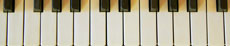

Weaver II Theme Documentation -- Version 2.0
See the Release Notes
The Weaver WordPress theme has been one of the most popular themes available at WordPress.org for some time. Weaver II is the latest generation of the Weaver theme.
If you are upgrading from an older version of Weaver (Weaver 2.2.x or earlier), please see Upgrading from Weaver.
Table of Contents
- How to get started
- All About Your Site's Home Page
- Design Hints
- Weaver Predefined Subthemes
- Weaver Main Options
- Mobile
- Weaver Advanced Options
- Admin Options
- Weaver II Pro
- Shortcodes
- Save/Restore Themes
- Weaver Page Templates
- Post/Page Editor Styling
- Entering Raw HTML and Scripts
- Post Formats
- Per Page and Per Post Options
- Per Post Style
- Weaver Shortcodes
- [weaver_breadcrumbs]
- [weaver_header_image]
- [weaver_html]
- [div]
- [weaver_iframe]
- [weaver_pagenav]
- [weaver_show_if_mobile] / [weaver_hide_if_mobile]
- [weaver_show_if_logged_in] / [weaver_hide_if_logged_in]
- [weaver_show_posts]
- [weaver_site_title], [weaver_site_desc]
- [weaver_bloginfo]
- [weaver_vimeo], [weaver_youtube]
- Custom Menus
- Weaver Helper Classes
- Built-in Support for Other Plugins
Woocommerce, WP PageNavi - Compatible Caching Plugins
- Using Weaver in your language
- Internet Explorer Compatibility (including PIE support)
- Technical Notes
- EU/UK Cookie Information
- Weaver HTML<div>Hierarchy
- Release Notes
- Upgrading from Weaver II 1.x to Weaver II 2.0
- Upgrading from original Weaver
The Weaver II WordPress theme represents a totally revised version of its predecessor, Weaver 2.2.x. As with previous versions, Weaver II allows you to change colors, fonts, sidebars, and other aspects of your site's look. In addition, it allows you to easily add whatever special code you might need (such as advertising tracking code), all from an easy to use "check mark" based theme admin page. It also has many per page and per post options, along with several page templates, that will allow you to totally customize the look of your site.
Weaver II allows you to build a custom site look by tweaking many of the style rules for your WordPress blog. You can get a very customized look just by picking colors and layout options. While the Main and Advanced Options control panels may look overwhelming, they really aren't that hard to use once you play with them a bit. The different option tabs have been organized by the logical regions of your site. Thus, to change how the menu or info bar appears, go to the Main Options:Menus tab. If you want to change specifics of how posts are displayed, go to the Main Options:Post Specifics tab. Other tabs are similarly organized.
Weaver II's internal code design was based on the standard WordPress Twenty Eleven theme. Beginning with Weaver II 1.1, Weaver II now includes it own translation files. Originally, Weaver II used visitor side messages strictly from Twenty Eleven. It now includes strings from the general Word Press string definitions. There are about 100 visitor side messages, and it is fairly simple to create a Weaver II translation file based on a combination of the Twenty Eleven translation file and the WordPress translation file for a specific language. If you create your own new translation file, we would be happy to include it in the official Weaver II distribution.
It is easy to design your own site look. You can start with one of over 20 pre-defined subthemes, and change the settings to meet your needs. It is easy to get started: you just have to pick colors and click on check marks.
For more advanced developers, there a many options for fine tuning. These include custom CSS, options to add HTML to various areas of the screen, and several ways to display posts in places other than the standard blog page.
How to get started:
- Select one of the predefined subthemes. There are over twenty to choose from.
- Go to the Main Options panel. You'll see a list of tabs with options for the various parts of your theme attributes you can change. Play around with them, and see how the theme you selected changes. This may be enough to get a custom theme you like.
- If you have ad-sense code, or other code from a similar site, you can easily add it to your site in the Advanced Options panel.
- Finally, read this help document. There are lots of tips here, as well as fairly detailed explanations of exactly which CSS rules Weaver supports, and hints on how to go beyond the basics and really customize your site.
Previous Versions of Weaver
Previously, there were two different versions of Weaver available: 2010 Weaver and Weaver. These older versions were originally based on the standard WordPress Twenty Ten. While support for the most recent Weaver will continue for some time, ultimately Weaver II will completely replace that version.
Weaver II is a completely new theme. Every effort has been made to make a transition from Weaver to Weaver II as smooth as possible. Because it is a new theme, there are some aspects that cannot be converted automatically. Please see the Upgrading from Weaver section for more detail.
Using With WordPress Multisite
Weaver will work with no additional settings on WordPress Multisite installations. However, there are some extra settings that help control which options are available to Multisite users.
Note that all non-checkbox options for this theme are filtered based on the 'unfiltered_html' capability which is determined by the account role. This mostly means that non-Admins cannot add <scripts> or <style> directives anywhere. Regular Administrators are allowed to enter <style>, but not <script> directives. And, of course, Super-Administrators can enter anything.
Note that non-Administrator accounts are not able to see Weaver II options on their Dashboard. However, the Per Page and Per Post options will be displayed by default to users with creation roles. You may want to restrict this on a per site basis. Either the Super-Administrator, or an individual sub-site Administrator can restrict access to the Per Page and Per Post option based on user role from the Admin Options tab.
You also may wish to restrict access to the HTML and <HEAD> area boxes found on the Advanced Options tab. You can do this by uncommenting the define (remove the // in front) found at the top of the theme's /wp-content/themes/weaver-ii/settings.php file. This will set the PHP constant WEAVERII_MULTISITE_RESTRICT_OPTIONS to be true. However, if you change that file, that change will be overwritten when you update the theme. Instead, you can also copy the uncommented define line to the wp-config.php file for your WP installation (anywhere before the "That's all, stop editing! Happy blogging." line), and the setting will then survive WP and theme updates.
All About Your Site's Home Page
Your Home Page is the one that is displayed when a visitor enters the address of your WordPress Site. Commonly, your blog will serve as the home page, and WordPress will automatically add a Home item as the first item on your menu bar. (That is the default WordPress setting.) If you instead want a static page as your home, you can go to the dashboard Settings→Reading menu, and click the "A static page" option, and specify an existing static page to serve as Home. (It will be called Home on the menu even if it has a different name when you created it.) If you don't want a blog at all, you can leave the "Posts page" option as '--Select--', and no blog will be displayed. If you specify the name of an existing static page, then the default blog will be displayed using the title of that page. The content of that page (as well as the page's template, such as Page with Post) is ignored: that static page serves only to set the title for the blog page.
Weaver gives you options on just what appears as your home page. The Main Options→Menu Options section has an option called "No Home Menu Item". If you check that, the automatically generated Home menu item goes away. That means if you have your blog set as the home page, there won't be a Home menu item to get back to it, but entering just your site name will get you to the blog.
All that can be very confusing, to say the least. Here's how to get exactly what you want as your Home page.
- Create a static page that you want to serve as your Home page - If you want it called Home, then give the page Home as its title. Add content as needed. If you want this page to be your Blog Posts, then use the Page with Posts template when you create the page, and check the 'Hide Page Title' in the Per Page Options section. Don't add any additional content.
- Check the 'No Home Menu Item' option in the Main Options→Menus Options section.
- On the Settings→Reading menu, check the "A static page' option, and specify the page you defined in step 1 as the Front page. Set the Posts page top to '-- Select --' if the static front page you specified will be your blog page or you don't want any blog page at all. If the blog will be on a non-home page, then enter the name of a blank place holder for the blog, as usual.
- You can use a Page with Posts page as your blog page, either as the Home page, or as a secondary page. Step 1 explained how to make it your Home page. Use the method of Step 3, and set the Posts page option to --Select--. This step is important. If you specify the static "Page with Posts" page in the selection box, you will end up with get the default blog page, and not your "Page with Posts" and any options you may have set for that page. And the main reason to use a "Page with Posts" for your blog page is to add filters to control just which posts are displayed -- something you can't do if you use the default Home page.
Design Hints
This section has a few hints on designing your own theme.
Choosing Colors
Good themes use related colors. Many times (but not always), when you look at the Main Options page, you'll notice that all the colors of the should "look good". They don't have to, but having a nicely matching set of colors.
The color picker has an interesting feature. Once you pick a color from the left section, the right bar shows different brightness levels of that color. This is especially useful for making a color lighter or darker.
Some themes use the same colors for all links, some vary. But using the same link hover color for all the different kind of links lends consistency to your theme. The same is true for the other colors - try for a consistent look in your theme.
Testing
There a a couple of tricks that can help make testing you theme easier. However, you might find it easier to open a new tab in your browser. Open the theme admin page on one tab, and the main site on the other. After you make a change (and save them), you can toggle to the second tab and refresh the page.
Another important thing is to change just one thing at a time. This may seem to take longer, but you will really be able to see the effect of your change this way and be sure it does what you want.
Important: Most modern browsers will cache web pages it loads. Sometimes, this can make testing your site very difficult because the changes you make won't show up because the browser has cached your page. If you find this happening, you should clear the cache. Some browsers (e.g., Firefox and Chrome) have plugins available that will let you disable the cache. If you are using Weaver II Pro, you should develop your site with the Weaver II Pro:Development Mode checked. This will cause the CSS to be generated inline, which help with most cache issues.
Saving Option Settings
After you make any changes to the values of the Main or Advanced Options, you must save your changes. If you navigate away from the design tabs without first saving your values, everything will be lost. This is typical behavior for most WordPress settings screens.
Saving Your Own Theme
Once you have a design you like, you can save your work. You can then fiddle and fine tune more without losing your previous work. The easiest way to save your work is to go to the Save/Restore tab, and use the Save/Restore Current Settings using WordPress Database option. This will save all your settings in the WordPress database. Any settings you make will be preserved until you save new ones. They will survive theme switches and upgrades. If you want to restore those saved themes, click the Restore Settings button.
The Weaver II basic version only supports this single way to save your settings. There is a plugin available (either from WordPress.org or on the downloads page of WeaverTheme.com) called Weaver II Theme Extras that allows you to save your settings on a file downloaded to your computer.
The Weaver II Pro version offers even more options that let you save and restore you settings from a settings file. There are two types of settings files - one that just saves the theme related options (and leaves out site specific options), and another that saves everything. These files can be downloaded to your own computer, or use by others to share you site design. And you can save many versions of your work.
If you are experimenting, it is a good idea to save copies of your work so you can get back to where you were.
Weaver Predefined Subthemes
Weaver comes with over twenty predefined subthemes (displayed on the Weaver II Subhemes tab. You can use them as-is, or as a starting point for your own designs. When you select a new subtheme, all the options values from the Weaver Main Options are cleared and set to the new values of the subtheme. Most of the Advanced Options are not changed.
To select a predefined theme, pick one from the "Select a theme" list, and click the "Set to Selected Subtheme" button. The name and small thumbnail of the currently selected theme is displayed on the right. Now you can open the Main Options Tab to start customizing the theme in ways you like.
Weaver Main Options
The Main Options tab provides you with over 100 "check box" options for customizing your theme. This might seem overwhelming at first, but the options have been grouped according to the part of the theme they affect. Each option includes an explanation as to what it does, often with extra information about using the option. It will be worth your time to scroll over all the options just to get an idea of all the things you can customize. Many of the options have been added after multiple requests from users on the Weaver Forum, and may not be anything you care about. Remember, these are options - it is unlikely that any one site design will use all the available options.
The options have been organized according to the different parts and functioning of your site's pages. The top of the Main Options page has tabs that let you quickly jump to each section.
Please note that you can provide values for the color boxes in a couple of ways. The easiest way is to click on a color, and a color selection palette will pop up. You can also provide values directly. This includes hex values as well as text values. The text values can include standard web colors such as red, blue, etc.; transparent; or even rgba() values. This gives you maximum flexibility for specifying colors.
Weaver defines default colors for many items. If the color value is blank, then the default value will be used. The default will either be the same as surrounding page elements, or be defined in the default theme style sheet.
CSS Options
For more experienced users, it is easy to add extra CSS styling to any of the elements included in the Main Options tab that have a color setting. When you click on the + next to the CSS tag, a new input area will open. You can enter CSS style rules, enclosed in {}'s. These rules will be associated with the specific area that the color specifies. There are essentially two kinds of color setting options - a background (BG) color, and a text color. The CSS you add to the pop-open CSS box will apply to the associated area. In practice, it doesn't matter if the option is a BG or a text color - the rules will apply to the same item.
Please see the CSS Help document to get more details on using this feature.
General Appearance
The General Appearance section contains options that affect the overall look of your site, including both content and widget areas. These combine to give your site it overall look, including things such as width, borders, and more. The entire site is overlaid on the Wrapper, Main, and Container areas. Hint: You might want to experiment setting the options to primary colors (e.g., red, green, blue) just to get an idea of how they fit into the big picture.
With Weaver II Pro, you can also define different default borders for the site when you also check the "Major Area Borders" option. There also in an option to tweak the search form.
Layout
Weaver II supports these sidebar layout arrangements:
The sidebars support three widget areas (Primary, Upper/Right, and Lower/Left). There are other widget areas supported, and described in the next section.
Weaver II allows control over site page layout, including margins, sidebar layout, and sidebar sizes. There are two major sidebar areas - one on the left of the site, and one on the right. The Layout tab allows you to control which layout is used for most of your pages. You can also set the layout for any individual static page from the Per Page Weaver option box displayed on the static Page Editor admin panel. Thus, you can essentially have any of the 8 different sidebar arrangements appear on any of your pages. You can even hide specific widgets areas within a specific sidebar on a per page basis.
One typical site design is to use one sidebar arrangement for regular pages - the blog, static pages, and single post pages, while using an alternate sidebar arrangement for the Archive-like pages - archives, categories, etc.
The basic version of Weaver II allows you to specify a sidebar arrangement for those two basic cases. You can also alternatively specify a different sidebar arrangement for your blog, static pages, and the single post page. These options will allow great flexibility in site look. You can also set the sidebar arrangement on a per page basis.
In addition, the Weaver II Pro version allows you to specify sidebar layout for each of the specific archive-like pages.
You can also specify the width of any of the individual sidebar widget areas. These are expressed as percentages. You can add more precision to the percentage if needed (e.g., 24.375%).
Technical Note: Weaver II's layout design separates the left and right sidebar layout wrappers (e.g., Right Side, Two Column) from the actual sidebar widget areas (e.g., Primary, Left, Right). The Pro Version allows you to control the background color of the sidebar wrappers, including the ability to have the color flow all the way to the top of the footer area.
Note for Double Column Sidebars: If you want a double column sidebar on the left or right side, but don't want the wide Primary area at the top or bottom, simply don't add any widgets to the Primary Widget area, and it will not be displayed - leaving you with two side by side widget areas (Left and Right).
Widget Areas
As just noted, Weaver II separates the sidebar wrapper areas from the sidebar widget areas. The Widget Areas tab controls the background, margins, and borders of both individual widgets, and the different widget areas, including the sidebar widget areas, the top and bottom widget areas, and the footer widget areas.
Widget areas are now insensitive to the border and margin widths - and include an option to specify border attributes in the General Appearance tab. The footer region automatically adjusts widget area widths depending on how many footer widget areas you actually use (from 1 to 4).
"Disappearing sidebars" - If you find the sidebars are not displaying in the right place (they will usually end up below the content area), it means there is some incorrect HTML code in your page or post content. This is the most likely reason for this, although incorrect HTML in a widget (usually a text widget) can cause the same symptoms. This behavior is not due to any issues with Weaver II, but is inherently a part of the way HTML code works. The cause will almost always be a missing </div> tag (or an extra <div>). HTML uses <div>...</div> blocks to determine different parts of a web page. If your content has a missing </div> tag, then the bad HTML will confuse your browser, resulting in the incorrect display of the sidebar.
Weaver II allows you to have as many widget areas you need. These new widget areas can be displayed on a per page basis. For example, using the Per Page options when you edit a page, you could have a different Top Widget Area, as well as different Primary, Upper, and Lower sidebars for every single page of your site if you wanted. You tell Weaver II to create these areas by providing a list of Widget Area names in this option area. The names should be letters, underscores, or numbers, and not include any spaces or other special characters. You can name them as you will - mytop,mytop2,myprimary and so on. These names are then used in the Per Page option area on the Page Editor screen to specify new or replacement widget areas. They also can be used by the Weaver II Pro widget area shortcode.
Special Sidebar Handling for Some Plugins
Weaver II uses an approach to generating sidebars that may conflict with some plugins. For example, there are some e-commerce plugins that generate an equivalent of their own page template that does not know about all the Weaver II sidebar layout options. Typically, these plugins will generate a <div id="content"> for the content area, and then invoke a theme specific file called "sidebar.php". Normally, Weaver II does not use that file, but provides a special version just for these plugins.
Here's how it works. Weaver II will check for a extra widget area called plugin_replacement (you would create it on the Main Options:Widget Areas tab). If it finds that widget area defined, it will generate a <div id="sidebar_plugin" class="widget-area" role="complementary"> area with the widgets included in that widget area. You will have to define some CSS to get that widget area to display how you want on the plugin's special page. Because getting the content area and the sidebar to appear side by side requires some fairly complicated CSS code, that can be a non-trivial task. You could also create a child theme with your own sidebar.php file.
If you do nothing - and don't add a plugin_replacement extra widget area, nothing will be added to the page, and the most likely result is a full width content page, which will often be just fine. Adding sidebar CSS or creating a child theme for sidebar.php are both tasks for advanced web site developers.
One more note - the special plugin page may appear in the WordPress All Pages list, and if you open it, it may have the Weaver II Per Page options box, but these options will probably not be used by the special plugin page. As explained, these pages are really like a custom page template, but outside the normal processing done by the Weaver II theme.
Header Options
The Header Area is at the top of your site, and really gives the world the first impression of your site. Thus, there are many options for tweaking the site Header.
Weaver supports up to two menu bars. With no additional action, your menu will be built automatically using the pages you've defined (using the Page Attributes parent and order settings). Display of your posts (blog) in the menu is determined by how you've set the main Settings->Reading Front page displays options. To use a second menu, you'll need to use Appearance->Menus, and define the Secondary Navigation menu. If you define the Primary Navigation menu, it will be used instead of the automatic menu generation from the Page Attributes settings. Note that by using the Page with Posts template to create a blog page, combined with the Reading Front page displays setting, and the No Home Menu Item, you have complete control over menu content and blog display.
You also have several options for controlling basic display of the Site Title and Tagline (set in the dashboard Settings->General panel). If these settings don't give exactly what you want, the very best way to get exactly what you want is to use a photo or image editor to add exactly the site logo or title you want - you can simply hide the default display of the site title and tagline in that case.
Weaver II supports the variable sized header images included beginning with WordPress 3.4. You can also check "Hide Header Image" to hide it. The header image will always be displayed using the site's full width. The default is 940px width by 188px high. You can also control how much space is displayed after the header and before the content.
This theme has automatic header image support for posts that include a Featured Image. You can disable that behavior in this section.
For ultimate control of the Header, it is possible to completely replace it on a site wide or per page basis using the Site Header Insert Code boxes on the Advanced Options tab or using the equivalent per page options.
Header Horizontal Widget Area
Weaver II allows you to build a great looking header for your site using this new horizontal widget area. This area supports up to four different widgets displayed horizontally in the header area. This widget area is placed immediately before the standard site image (which you can hide if you need to.)
Consider this very simple example. It has a menu on the left, a message next, the site name, and finally a banner image.
| Home Page 1 Page 2 |
Welcome to our site! |
Weaver II Theme |  |
You can use any widget in the Header Widget Area. It is likely the standard Text Widget will be very useful here. For example, you can insert a welcome message, as well as a banner image using the Text Widget. Because Weaver II adds support for shortcodes in the Text Widget, you can put almost any shortcode feature in your header. But you could also use a Menu widget, a slide show widget, an RSS feed widget - whatever you might want in your header.
The layout of each widget in the area can be set using the Main Options:Header tab. You can set the overall background color for the widget area, the font size, and the min-height. You can set it so the Header Widget area appears only on the front page. You can hide it from the Mobile view. Note that you can use the CSS+ option on the Area BG color to add whatever CSS you might need.
Widget Layout
You can also control the layout of each of the four widgets. Note that only the number of widgets you actually add to the area will be displayed. So if you have 3 widgets, only the settings for the first three widgets are used. For each widget, you can specify BG color (or per widget CSS with the CSS+ option), the width used for that widget (in %), and a different width for the mobile view. The widths must add up to 100%. If you don't specify a width, the widgets will simply be left aligned and take up their "natural" width.
It is likely that your custom Header Widget Area based header won't look great when viewed on a mobile device. The width options allow you to play with the mobile look. For example, you can specify a 0 (zero) width, and that widget won't be shown. (Works on the standard view, too, you can mix and match which widget areas are displayed on regular and mobile screens.) Typically, you might use just 1 or 2 widgets for the mobile device, and specify an alternate spacing. You can use the Mobile:Simulate Mobile Device option to see just how your header will look on a mobile device.
Important Guidelines
When you create a header using the Header Widget Area, you should be sure to follow these two important guidelines:
- Specify a width for the all widgets you use. The total with should add up to 100%.
- Each widget in the widget area uses the 'max-width:100%' attribute. This means that images that are larger than the widget's width will be auto-resized to fit the width available. If you have large image you want to take up only part of a header widget, you need to specify a width with the <img> tag.
- The Header Widget Area is 4 widgets wide.
Technical Details
The Header Horizontal Widget Area is laid out using nested <div>s. Because headers usually have large sized content, it was determined that supporting up to four widgets per row was optimal. Each widget is contained in a div (<div class="header-widget widget_widgetname header-widget-1">). The "header-widget-1" class name is unique per column (1,2,3,4). If you supply more than 4 widgets, the Header Widget Area will add a new row, but reuse the 1-4 "header-widget-#" class name.
The widgets generated start out with no borders, no margins, and no padding. This is really a bare-bones layout, and allows complete flexibility in how you style each widget in the horizontal area.
Menu Bar and Info Bar
Weaver II allows you to control many aspects of the main menu bars, as well as the Info Bar (which is new to Weaver II).
Menu Bar
Weaver II Basic allows you to control the menu bar colors, as well as the colors of the submenus and hover colors. You can specify bold or italic text. The font style will match the Titles font settable on the Font tab.
Weaver II Plus allows quite a few extra options for tweaking your menus.
Info Bar
The Info Bar is new to Weaver II. It provides two basic features - a "breadcrumb" menu that shows the path to the current page. On blog pages, there is an additional "Navigation Page" display that displays a numbered menu for quick access to a specific block of blog posts. (Note: if you are using Yoast WordPress SEO and enable its breadcrumb support, Weaver II will automatically use Yoast's version instead of the built-in breadcrumbs.)
The basic version allows you to hide the info bar, as well as control if the info bar is displayed right after the menu bar (thus taking the full width of the page), or right above the content area (thus only going to the sidebar).
Weaver II Pro offers other options for the Info Bar, including the ability to add extra HTML to it.
Links
Options for all links now appear on a single tab: Links. Many sites will use the same coloring and style for all links, but Weaver allows you to control the default links, Post Info Line links, and Widget links separately.
While you can set a separate color for Visited links, this option has fallen out of widespread use, and is usually left the same as the regular link color.
Post Entry Title Link
Note that in WordPress, the title of each post is actually a link that will open the full single page view of each post. It is customary to style the post title to use the same color as page titles, but use a different hover color (which usually matches the standard link hover color) to indicate the title is a link.
Content Areas
The Content Areas section covers options that affect both your static page content, and blog post pages. These options all work as explained. The Page Title Text option is slightly different in that it applies only to static pages, and not to blog post titles. Each blog post title is actually a link to the full view page of that post, and uses the Post Entry Title Link set the post title color.
Leaving Comments
It seems that disabling Comments and Talkbacks for posts and static pages is one of the more common tasks that people want to do, but have trouble finding the right options to do it. I don't think the WordPress interface makes it very clear what is going on, because this topic may be the #1 most asked question on the Weaver froum. So, here's the scoop on controlling comments.
- This is really not a theme issue – the control is entirely done using regular WordPress options.
- Comments are controlled in the Dashboard Settings->Discussion page. There are quite a few options available, but if you want to disable comments by default for posts and pages, select the appropriate options on that page. (Unchecking the first 3 boxes will do it.) Don't forget about trackbacks and pingbacks because they can generate "comments" as well.
- If you've turned off comments by default (and you will probably end up doing that because even with Akismet and a Captcha plugin, you're likely to end up with plenty of spam), then you can re-enable comments for specific pages and posts from the Page and Post editor screens.There is an option panel on the Page/Post editor pages called "Discussion" with check boxes for that option. If you don't see that panel, you need to display it by opening the Screen Options tab in the upper right corner of the Page/Post editor page, and then check the Discussion show option.
- Now, if you created any posts or pages before you disabled comments, you'll have to go to each individual page and post and disable comments explicitly. Setting from the Settings->Discussion screen doesn't retroactively change the option. You'll have to delete any old comments you've accumulated as well.
- After you've done all this, by default, you will not see any reference to comments in the Post bottom info line, or at the bottom of regular pages. There is a Weaver Main Options in the Post Specifics section to display a "Comments are closed" message if you want .
Post Specifics
Next to the Header, it seems that control of just how Posts (blog articles) are displayed is something many people want. This section discusses some of the things you can control.
Post BG
This will change the background color of just the post. This can be used to highlight each individual post. You can also use the CSS + option to change the font color ({color:#xxxxxx;}) or add a border with a bit of padding ({border: 1px solid black;padding:5px;}).
Post Entry Title Link
The title of each post is a link, and controlled on the Link tab. Note, however, that the Bar under Titles option in the Content Areas tab also affects post titles.
The Info Lines
Each post has two information lines (also called Meta Info). The line right after the title has the date of the post and the author. The last line of the post has the post's category, tags, and link for comments. You can control the appearance of these Meta lines in several ways. The two Info BG color settings let you put a background color behind the Meta lines if you wish, and you can add CSS to them for more effects. You can use the default Meta info wording with | separators, or use Icons for each part of the meta info. You can selectively hide different parts of the meta info (which forces use of icons, however). (Comments will always be displayed if they are enabled and associated with a post.) One of the design features of Weaver II is that it is language dependent on the Twenty Eleven theme's user interface wording. Thus, it is not possible to change the wording such as Posted on date by author. If you don't like that wording, you can use icons instead.
Full Posts and Excerpts
Posts are displayed in three distinct places: the main blog page, when part of a specified list (archives, categories, author, etc.), or when displayed as a single page by itself. The full content of a post is always displayed on the single page view. The blog page also displays the full content of a post, unless you've manually added the <!--more--> tag, which then causes a "Continue reading..." message to be displayed on the blog page. In special list views (archives, etc.), posts are displayed as excerpts. These excerpts are normally 55 words long, with all images, formatting, and links removed. You can adjust the excerpt length. You can specify to display full posts on special post list pages, and display posts as excerpts on the main blog page (which can be combined with the Featured Image to generate nice looking post list). These can also be controlled on a per post basis from the Edit Post page. Note that checking a display as full post option does not override your manual placement of <!--more--> tags.
The Featured Image
You may have seen the Set Featured Image option on your post and static page edit panel. What is it good for? Unfortunately, there is no specific WordPress standard on how to use Featured Images. However, Weaver II's design has attempted to maximize their usefulness.
If you add a featured image that is at least as wide as the standard header image, then that Featured Image will be used as a replacement image for that page or post single page view.
If the image is smaller, then it will be displayed inline with the post or page. Here's how to add a Featured Image and control how it is displayed:
- Click the Set Featured Image from the post/page edit panel. It is usually on the lower right. (To change the Featured Image, you first have to delete the current one, and then set a new one all over.)
- Pick an image. This will pop up the Add Media interface. After you upload a new image, or pick one from your media library, you'll be shown the info about the image. Important step: at the bottom, click the Use as featured image link. Close that box.
- Select one or both of the Weaver Main Options tab options in the Post Page Specific section: Show Featured Image for full posts and/or Show the Featured Image for excerpted posts.
For excerpted posts, a thumbnail will be displayed at the top left of the post. For full length posts, the full image will be displayed at the top of the post.
Other Options
You can set the background color for sticky posts. (Add {border:none;padding:0;} to the CSS of the Sticky Post BG option to make sticky posts look like other posts.)
You can control author information display, as well. You can also show the author's avatar (as defined by a gravatar.com account, for example) on each post. By default, if the author has included biographical information on author's account settings page, that information will be included when the post's single page view is displayed. You can hide that.
When a visitor clicks on a image thumbnail, an attachment page will open up with the full sized view of the image. If you want your visitors to be able to leave comments for that image, check the Allow comments for attachments box.
Photo Blogging
Weaver II has a couple of features that make creating a Photo Blog easy. The three main features to help with creating a photo blog include:
- Multi-column blog layout. Weaver II free version allows you to display your blog entries in up to 3 columns. Weaver II Pro makes this even better by including support for the Masonry dynamic layout feature which will squeeze your posts as close together as possible in up to 5 columns.
You can specify the column layouts either globally from the Main Options -> Post Specifics tab, or on a Per Page basis if you are using the Page with Posts template using the Per Page option box on the page editor.
- The Compact "Post Format" Posts option will make each post formatted using one of several "Post Formats" display in a compact form. For Photo Blogging, this option is especially useful for the Image Post Format. By default, the Image Post Format will show the first image from your post with a different post info line. But compact display option makes the "Image Post Format" display only the first image found in a post with no borders, no margins, no excerpt, and no extra text of any kind - just a plain image. That image links to the post's single page view. If there is no image, then the text content of the post will be displayed. This allows you to include short descriptive text between your images if you need. Other post formats have similar compact versions.
- Page with Posts - this Weaver II page template allows you to show your posts as a blog anywhere you like, and include filtering and other per page options that you can fine tune to make a great looking Photo Blog.
Hints
Here are some hints for creating a Photo Blog:
- First, bulk load all your photos into the media library. You might want to update the photo title, alt, caption, and description fields when you upload, although you can do that later.
- For each photo you want in your blog, create a separate post. Give the post a description of each photo. It is probably best to have a separate post per photo. When you add the image to the post, remember to select you want the image linked - either to the raw image that displays the image only in your browser, or as an attachment that will display the image fullsize on a standard site page.
- Be sure to check the "Image" radio button for the post found in the Format box at the right side of the Post Editor page. (If the Format box isn't showing, open the "Screen Options" in the upper right and check the appropriate box.)
- You will also likely find it useful to assign a Category to each post. You can use categories to organize different "albums", and then use a Page with Posts template's filters to display each album on a separate page. You can also use the categories to filter out images from your regular blog.
- Enable the Compact "Post Format" Posts option. This will show your images in a good looking, image only format on your blog pages. You can set this globally from the Main Options -> Post Specifics tab, or you can set it on a Per Page basis from the per page options box on a Page with Posts page.
- Each post can contain as much information as you like. As you add each image, you have the opportunity to fill in a caption, title, and alt tag. You can also add whatever commentary you like to the image. You can have as many images as you want on a post, but only the first one is displayed on the blog view.
- If you'd like some text mixed in with all your images on the blog view, you can easily accomplish that by creating a text-only Image Format post. You can use these comments to separate subjects, years, or anything else you might want.
- Display your Image posts using multi-column layout. If you have Weaver II Free Version, you can display your images in up to three columns. You can set the globally for all blog pages, or use the Per Page setting for a Page with Posts. You photos will be displayed as an image only organized in columns, laid out row by row, left to right. Whenever a visitor clicks an image, it will option the post's single page view.
- If you want even cooler photo layouts, upgrade to Weaver II Pro, and you will have access to the Masonry blog post layout feature. When enabled, Masonry will pack all your posts on a blog page in up to five columns, and remove all vertical space between posts with uneven height - no need for plain row by row layout. Masonry will work with standard blog posts, but works especially well with the compact image posts.
- When you use Masonry, you also have the option to specify on a Per Post basis that a post should span two columns (available on the Per Post options box on the post editor). This is especially useful to have your horizontally oriented images cover two columns. You can even specify this for regular posts for ones you might want to cover two columns.
- Typically, a blog page will display only a few posts (10 is typical) before adding paging. The number of posts to display on a blog page is a global setting found on the Settings -> Reading tab. If you are displaying many photos in a compact format, you will want to show many more than just 10. There is an option included on the Page with Posts per page filter section that will allow you to set how many posts to show on one page.
- Remember, using Weaver II's Page with Posts template, you can create multiple blog pages on your site - standard text posts, photo posts, and any other kind of set of posts you can imagine - all by setting the appropriate filters on the Per Post option page.
Custom Post Info Lines
One commonly request is the ability to tweak the top and bottom info lines associated with blog posts. Weaver II Pro now includes a template function that gives you total control over the top and bottom info lines of posts displayed on a blog page, and posts displayed on the single page.
The custom info lines are set on the Main Options:Post Specifics:Custom Info Lines tab. You can change the top and bottom info lines on blog pages (including Page with Posts and [weaver_show_posts], and on the single page. You need to specify all options if you want the standard info lines replaced.
The text you specify can contain any valid HTML you wish, plus a set of special template %values% that will get replaced by the correct values for the specific post. For example, setting the Top Post Info line to:
<strong>%title%:</strong> %date-icon%%date% %author-icon%%author%
will create a top info line that looks like this:
The %title% is replaced by the post's title. The %date-icon% produces the calendar icon, while %date% produces the published date and link to the post. Similarly, the %author-icon% and %author% produce the author and link to the author archive page. Given a mixture of HTML, possibly including styling, and the provided set of parameters, you can build almost any combination of relevant information on the post top and bottom information lines.
There is no restriction on which values can be used on which line, nor other HTML you might wish to include. You can include whatever text you want mixed in with the definition. Some of the values allow you to override the standard text included with the standard values (e.g., 'permalink'). If you define an info line template, it will override any other info line setting you have (except hiding and position swap).
Here is a list of the supported template values:
- %date% - Replaced with the date link of post (links to post single page)
- %date-icon% - Replaced with the standard date icon (a calendar). If used, should be used in conjunction with the %date% value (and similarly for other -icon values).
- %day% - Replaced with day (1-31)
- %day0% - Replaced with day (01-31)
- %weekday% - Replaced with name of week day (e.g., for English, Monday)
- %month% - Replaced with full name of month (e.g., January)
- %month-num% - Replaced with month number (1-12)
- %month0% - Replaced with month number (01-12)
- %month3% - Replaced with month abbreviation (Jan)
- %year% - Replaced with 4 digit year
- %author% - Replaced with the author's name and link to author archive page
- %author-name% - Relpaced with the author's name, no link
- %author-icon% - Replaced with the standard author icon (a head and shoulders)
- %author-email% - Replaced with "mailto:" link to author.
- %avatar% - Replaced with a small version of the author's avatar (gravatar, etc.)
- %category% - Replaced with a list of categories of the post (with links)
- %category-icon% - Replaced with the category icon (folder)
- %tag% - If the post has tags, replaced with a list of the post's tags (with links)
- %tag-icon% - If the post has tags, replaced with tags icon (tag)
- %tag:Label if are tags% - If you want a text label for tags, this will display the text that comes after the "tag:" if the post has tags. A post always has categories, so this form is not needed for categories - just add the text into the definition if you need a label for categories.
- %title% - replaced with the post title - not linked
- %post-format%- replaced with the post format of the post if it is defined (no link)
- %comments% - Replaced with the standard link to the comment box on the single page. Not displayed if comments are disabled. Will have a different message for 0, 1, and >1 comments. You can change the messages displayed by %comments& using the 'comments0-2' values below.
- %comments-icon% - Replaced with the comment icon (a bubble)
- %comments:Label if comments open% - If you want a non-linked text label for comments, this will display the text that comes after the "comments:" if the comments are open for a post.
- %comments0:Text if no comments% - Replaced with empty string, but sets the message used when no comments have been submitted for this post. Use a '#' in your string to display actual number of comments. (Note: you must still use the %comments% option to have the comments link displayed.)
- %comments1:Text if one comment% - Used when exactly 1 post. Use a '#' in your string to display actual number of comments (0).
- %comments2:Text if more than 1 comment% - Used when more than 1 post. Use a '#' in your string to display actual number of comments (1).
- %permalink% - Replaced with the permalink to the post - includes standard text (permalink), which can be replaced with value below.
- %permalink-icon% - Replaced with permalink icon (chain) plus the permalink string (this is different than the other icon values, but this value needs to work this way.) Unlike other -link values, you will never use both $permalink% and %permalink-icon%.
- %permalink:Permalink-text% - Used to set the text used for the permalink link.
Footer Options
The Footer Options control basic Footer appearance.
If you fill this in, the default copyright notice in the footer will be replaced with the text here. It will not automatically update from year to year. Use © to display ©. You can use other HTML as well.
Use to hide the copyright notice.
Fonts
The Weaver II basic version design groups font family usage into two basic areas: the Content Font, which includes most content and widget text, and the Titles Font, used for post, page, and widget titles, info labels, and menus.
In addition, the design is based on a single "Site Base Font Size". This value is expressed in px, and defaults to 12px. All other text elements are sized as a percentage of that base size. One of the main reasons of this is for consistent display on various screen sizes, including mobile devices. It is possible to simply change the base font size, and the rest of the site will automatically be adjusted to match.
Note that it still possible to set the size and font family using Custom CSS Rules with the Weaver II basic version. However, Weaver II Pro provides much greater control over fonts.
Weaver II Pro Font Control
The Weaver II Pro Font Control panel gives you fine tuned control over the fonts various elements of your site will use. You can use a set of standard Web fonts, or for total flexibility, you can use any of the free Google Web Fonts. In addition to the two general areas available in the basic Weaver II version, the Pro version lets you set the font of virtually every text element on your site. You can also specify font size, style, and other attributes.
Mobile
Having a great looking mobile view of your website has become an essential part of any modern website. Weaver II has you covered! Weaver II has some of the best support for mobile devices available from any WordPress theme. It offers five different mobile support modes, each with advantages and disadvantages - but all of them deliver a great looking display on mobile devices. Weaver II works seamlessly on most mobile devices, automatically adjusting the styling for various sized screens.
An Overview of Mobile Friendly Website Design
Responsive Design
This section will explain some of the technical details of how mobile devices are supported. You may have heard the term "Responsive Themes" to describe themes that support mobile devices. Responsive design allows the content of any website to automatically adjust to the size of the display screen. You can easily determine if a website is responsive from a desktop browser by using the mouse to make the display window narrower and narrower. If the site is responsive, the images will shrink automatically to fit in the window. As the window gets smaller and smaller, some content (such as sidebars) will rearrange itself, or disappear altogether.
All this magic is done entirely by using appropriate CSS styling, and special CSS rules called "@media" rules which allow the site to use different CSS rules depending on the width of the site. The other major component of responsive design is using relative sized for content such as font sizes or images. As a rule, using fixed pixel sizes (px) for elements will render the site non-responsive. While it can still be appropriate to use fixed px sizes for some items with small widths, in general all sizes are replaced by percentages (%). Then as the screen size shrinks, content will adjust automatically.
One of the big advantages of a totally responsive design is that it depends solely on the width of the display screen. It is not necessary to know if the site is being displayed on a specific device or device type. Weaver II's design is Responsive at its heart. But, Weaver II also can go beyond simple responsive display.
Beyond Responsive Design: Smart Device Support
Sometimes a pure responsive design has limitations. One of the basic limitations is that it must work with the same content on all devices. It cannot change the content based on device. A WordPress blog page offers a great example of how this can limit the display of your site. When you display posts on a blog page, you have a choice of displaying the full content of the post, or simply an excerpt. Many people want to show the full content on the blog page. The problem is that on tiny phone screen, displaying the full post content can really make the blog page too long. It would be much better to display only the excerpt on phones. Strictly Responsive design is not able to do that.
There are other things - displaying alternate images, for example. While technically it is possible to show alternate images for desktops and mobile devices using pure responsive design, both alternatives must still be downloaded to the browser. Thus, while you might get the look you want, the mobile browser still has had to download two different images, increasing the data downloads, often at a penalty on slower cell connections.
Weaver II offers Smart Modes for supporting mobile devices in addition to its strictly responsive support modes. It is possible to determine if the browser is on a mobile device before any content is delivered to the device. This allows smart selection of the content delivered. For example, when using Smart Mode mobile support, Weaver II will automatically use excerpts for the blog page. It can use an alternate image, not send the standard sidebars at all, use an alternate mobile sidebar. In other words, Weaver II's Smart Mode mobile supports delivers an optimal view of your site while reducing the total amount of data the device needs to download.
Weaver II's Smart Mode Mobile support is done using what is called the User Agent string. This is an identification string delivered by every browser to the site host before any content is downloaded to the browser. The User Agent string allows Weaver II to identify mobile devices.
For the most part, using a Smart Mode for mobile device support is the preferred and recommended way to support mobile devices on your site as either the optimal or stacked version will deliver an optimal view for mobile devices. The main exception to this rule is that Smart Mode support has limited compatibility with WordPress Cache plugins. Smart Mode is compatible with Quick Cache and W3 Total Cache, but Quick Cache requires the Weaver II Theme Extras Plugin, and W3TC requires custom settings to work properly. If you use a WordPress cache plugin, please see the section in this file on Compatible Caching Plugins. Note that any of the pure responsive modes are compatible with any WordPress cache plugin with no additional settings.
Weaver II Mobile Support - the Specifics
This section describes the options available on the Mobile Weaver II Admin tab.
Weaver II Mobile Modes - Smart Modes vs. Pure Responsive Modes
- Smart, hide sidebars - This is the default Weaver II Mobile support mode. It is the equivalent of the mobile support provided in Weaver II versions 1.1 and earlier. This mode will actively detect mobile devices using the mobile browser's User Agent. Output is optimized to send the smallest amount of content as possible to mobile devices. This includes: Automatic display of excerpts on blog pages, providing an alternative mobile widget area to serve as a replacement for the standard sidebars, no display of standard sidebar areas, no display of the footer area, ability to display alternate header image for mobile view, ability to selective show or hide content on the mobile view. Note that "no display" in this mode means that the content is not delivered to the device, resulting in smaller download size. Can also toggle to Full Desktop view.
- Smart, stacked - This mode has all the features of the Smart, optimal mode. The main difference is that the stacked mode will display the standard sidebars stacked below the main content area instead of the alternate mobile sidebar area, as well as the footer area. This mode will download more content to the device, but allows display of your sidebars if that is what you need to do.
- Responsive, not stacked - This is a pure responsive mode. The look of your site will be very much like Smart, optimal on mobile devices - standard sidebars are not displayed, the mobile menu slide open is displayed on mobile devices instead of the standard pull down menu (which will be displayed on browsers with a wide enough window). Neither responsive modes will display the alternate mobile primary menu. There will not be an option for the Full view, and the Responsive modes download the most content to the browser (both desktop and mobile browsers.) Some content will be selectively hidden or displayed depending on the width of the device, but all the content is downloaded to the browser.
- Responsive, stacked - Just like Responsive, not stacked, but the standard sidebar areas will be shown stacked vertically below the content area on narrow devices. This mode will not download the mobile widget area, so the content may be slightly smaller than the Responsive , not stacked mode. The desktop site view produced by this mode is identical to the desktop view produced by the Smart modes.
Note that both the Smart modes and Responsive modes use responsive design to display much of the content. For example, both Smart and Responsive use responsive design to automatically reduce the number of blog columns as the display shrinks. The Smart modes are able to generate different content based on the device.
Smart Mode Mobile Support Evaluation
Pros- Creates smallest HTML pages to download to mobile devices.
- Supports Full desktop view on devices - can toggle from Mobile to Full view.
- Supports more options:
- hiding footer
- using mobile widget area as an alternative
- automatically showing excerpts on blog pages
- specify an alternate home page for mobile site
- specify totally different theme for mobile site
- specify alternate header image for mobile
- specify custom CSS for mobile view
- support for iOS mobile icons.
- Has support for some specific devices (e.g., Apple iOS, and Android).
- Has really good support for conditional display of content depending on the device type.
- Will automatically behave responsively for unknown devices.
- Built in mobile emulator for specific device types - phone, small tablet, and large tablet.
- Supports alternative primary custom menu definition.
- Only works with some WordPress cache plugins, requires special settings for those plugins.
- May not work optimally with specific new and unknown mobile devices.
Pure Responsive Mobile Support Evaluation
Pros- Works with all WordPress cache plugins.
- Will display nicely on any mobile device, as well as respond as user shrinks desktop browser.
- In general, you will pay less attention to mobile vs. desktop content visibility. Responsive mode has some ability to selectively display content depending on device, but it is all based on the display width of the mobile browser. Anything you "hide" for a mobile browser will also be hidden on a narrow desktop browser window.
- View what your site will look like on mobile devices simply by shrinking your browser window.
- Display will always be responsive to the actual width of a mobile device - visitors will not be able to see a standard desktop view of your site on their mobile device, even if they set the mobile browser to act like a desktop browser.
- No auto display of excerpts for blog pages.
- Does not support alternative custom mobile primary menu.
- Must create larger pages for devices (both mobile and desktop) to download. For example, there can be multiple copies of the menu created, as well as copies of the sidebars that may not be displayed.
- No special support for some specific mobile devices.
Mobile Device Simulation
Because not everyone with a website has access to a smart phone or other mobile device, and because they aren't that convenient to test on, Weaver II provides a mobile device simulation mode. If you enable the mobile device simulation from the Mobile tab, when you view your site while logged in as an admin, you will get a view that very closely matches the view on typical 320px wide mobile devices.
Note: This simulation mode works only when using a Smart Mode mobile support. You can see how your site will look on mobile devices when using a Responsive Mode simply by making your squeezing your desktop browser down to use a narrow window.
The display you would see on an iPhone or iPod Touch is exactly the same, with a couple notable differences. First, the mobile device won't be as tall as what you see on your screen - but they generally scroll very quickly, and it is easy to see all the content on the mobile devices.
Second, because most modern mobile devices are touch based, users have a big finger that covers the links. Users won't typically see the a:hover behavior, or the pop up tip boxes. For this reason, the default behavior for Weaver II mobile view is to underline all links in the content area. This can be changed (in Weaver II Pro), but testing on various mobile devices has shown that the underlined links are easier for the user.
You should also remember you are looking at the site on a big screen. It might seem you should reduce the font size or other features, but remember that most mobile devices have physically tiny screens. Everything you see on your full sized monitor will be physically much smaller on real mobile devices.
Finally, it is a good idea to disable the mobile device simulation when you make your site available for public viewing. If you have a demo site that you want to display the mobile view to desktop visitors, there's an option that allows that.
Mobile Device <body> Classes - Smart Mode
In addition to the special options for controlling the mobile view display, in Smart Mode mobile support, Weaver II adds a number of class names to the page <body> tag depending on what mobile mode you are using, and for Smart Mode support, the specific kind of device detected. These classes can be used in custom CSS rules to refine your site's styling.
Weaver II Adds these classes as appropriate for Smart Mode. It is possible that more than one of these classes will be defined (e.g., all of weaver-any-mobile, weaver-mobile, and weaver-phone for phone devices):
- weaver-desktop
- weaver-any-mobile
- weaver-mobile
- weaver-phone
- weaver-smalltablet
- weaver-tablet
Weaver II will also add a class depending on the mobile mode used. Only one of these will be defined:
- weaver-mobile-smart-nostack
- weaver-mobile-smart-stacked
- weaver-mobile-resp-nostack
- weaver-mobile-responsive
You can use these tags to form conditional CSS rules. For example, when using Smart Modes: .weaver-mobile .entry-utility {display:none;} will hide the bottom post info line on mobile devices. Using the responsive mode classes will usually require using @media rules as well.
Mobile Device Pure Responsive Custom CSS
The above Smart Mode classes are NOT added when Weaver II is in pure responsive mode. Instead, you must use @media CSS rules if you want to create device specific rules. The following @media rules cover how Weaver II treats devices - phone, small tablet, large tablet, and desktop. You can add whatever specific CSS rules you want inside the {}'s of the appropriate @media definition. The rules will be used in both mobile support modes - Smart Mode and Responsive Mode.
Add these to the Advanced Options : <HEAD> : Custom CSS rules box.
/* these @media rules can be added to your custom CSS to handle custom responsive styling for various devices */
/* value: 769 for desktops, 641 for tablets and bigger, 581 for small tablets and bigger */
@media only screen and (min-width:769px) {
}
@media only screen and (max-width:768px) and (orientation:portrait) { /* portrait large tablets */
}
@media only screen and (max-width:640px) { /* small tablets AND phones */
}
@media only screen and (min-width:581px) and (max-width: 640px) { /* small tablets */
}
@media only screen and (max-width: 580px) { /* phones */
}
It is also easy enough to tweak these, add min-width or max-width to refine just what devices will be affected, but at this point in time, this is pretty much covers how the devices are handled.
Alternative Mobile Theme
Weaver II Pro offers the option of defining a completely new alternative theme to be used when the site is views with Mobile Devices. This is an overview of using that feature.
First, you need to save your current "normal" theme in a file using the Save/Restore tab. Then design your mobile version with all options you want. While it doesn't have to look anything at all like the original site, keeping both versions looking similar will help your visitors recognize your site. You can use the Mobile Simulator to view your mobile design while it is serving as your "main" theme. When you are finished, you should save the new "mobile" theme in a file.
Then, from the Save/Restore tab, click the "Save Settings for Mobile View". This will save the settings in a special WordPress database entry that will be used when the site is viewed from a mobile device.
You should now restore your "normal" theme by reloading it from the saved version.
One last step - to enable having mobile devices use the alternate theme, you need to check the "Use Alternate Mobile Theme" option while your "normal" theme is active. Now your site will have two possibly completely different themes for the normal and the mobile views of your site.
Note that the mobile theme works only on smartphone and small tablet sized devices - it is not used for iPad-like devices. And finally, while you can use the Mobile Simulator during design, once it is set as the Alternate Mobile Theme, it will not display with the simulator -- you will need to view it with a real mobile device.
Weaver Advanced Options
The Advanced Options page allows you to define many more advanced options. While the Basic version of Weaver II supports many Advanced Options, some are available only in the Weaver II Pro version.
The values you put here are saved in the WordPress database, and will survive theme upgrades and other changes.
PLEASE NOTE: Limited validation is made on the field values, so be careful not to paste invalid code. Invalid code is usually harmless, but it can make your site display incorrectly. If your site looks broken after you add settings in these sections, please double check that what you entered uses valid HTML commands.
Site <HEAD> Section
The <HEAD> Section tab includes two major setting areas. These areas are used to provide advanced code to enhance the functionality and style of your site.
The <HEAD> Section
This input area is one of the most important options in Weaver for customizing your site. Code entered into this tab is included right before the </head> tag in your site. This code can include almost anything that can be added to the <head> section of a site. One of the most common uses will be to add code snippets provided by outside sites such as Google Analytics. You can also provide extra links to external style sheets or JavaScript libraries as might be needed.
Unlike with previous version of Weaver, the <HEAD> Section should not be used to enter custom CSS rules. Instead, use the next section - Custom CSS Rules
The Custom CSS Rules Section
This section may be one of the most useful and used advanced option sections. This is where you can enter custom CSS to fine tune the styling of your site. The sources for these CSS rules can vary. For example, the Weaver II Snippets document describes many possible CSS code snippets that can be used and modified to control your site's styling.
You should enter just CSS rules in this box. Don't include a <style></style> block. This is changed from how CSS was entered into the <HEAD> Section in previous versions of Weaver. The style rules you add here will be included after any other CSS rules Weaver II generates - so they will override those rules.
Note that with Weaver II Basic, these CSS rules will be added to the general <style> section Weaver II generates in the site <head> block. In Weaver II Pro, this code is added at the end of the actual .css style file Weaver II Pro generates, and won't appear directly in the <head> block.
The Weaver II documentation also includes a short introduction of CSS, and you will likely find it worth your time to learn a a bit about CSS.
Note: You can also insert code into the <HEAD> section on a per page basis when you use the Edit Page editor. If you define a Custom Field named page-head-code for the page, then you can supply HTML for that page's <HEAD> section.
The CSS+ boxes associated with every color and background color selection box in the Weaver II Options can also be used to enter Custom CSS Rules. If you add CSS to a CSS+ box, you need not enter any id or class name - the proper ids or classes will be automatically provided to match the item associated with the color selection box.
Directory Macro Replacement for CSS images
Sometimes you might want to add a background image to a style (e.g., using a url() value). Those images need to be stored someplace available to visitors to your site. One typical place is to use the WordPress media gallery, and use the full URL to those images.
Because you might be building a child theme, or an Add-on Subtheme, Weaver II provides a handy macro replacement capability for Custom CSS Rules and CSS+ rules. For example, if you want to supply some background images for a child theme, and you would like to save those images in a directory called /images in the child theme directory, you can use the macro %stylesheet_directory% in a style url() value.
For example, say you've built a child weaver theme, and have a file called content-bg.jpg stored in the child theme's /images directory. You can specify the location of that file in a site independent manner by using:
#content {background-image: url(%stylesheet_directory%images/content-bg.jpg);}
The %stylesheet_directory% will be replaced in the generated CSS code as
url(/wp-content/themes/your-child-theme/images/content-bg.jpg)
The file directory macros supported by Weaver II will produce a root-relative path, and include the trailing /. Using a root-relative path eliminates issues with http and https protocols, and will be site independent. The following macro values are supported:
%template_directory% - the main theme directory. If the theme is a child theme, this will be the directory of the parent theme (so /weaver-ii/ or /weaver-ii-pro/).
%stylesheet_directory% - the directory of the theme's stylesheet - thus if it is a child theme, then this will be the child theme's directory.
%addon_directory% - the directory where Weaver II loads Add-on Subthemes. Add-on Subthemes are available for download from WeaverTheme.com, and are loaded in the /uploads/weaverii-subthemes/addon-subthemes/ directory. This value is useful for providing images with Add-on Subthemes.
Actions and Filters
This block lets you add arbitrary PHP code to your site. This main purpose of this feature is to allow you to add WordPress Actions and Filters for plugins and many standard WordPress actions and filters. This is a very advanced option, and some understanding of PHP code and how WordPress actions and filters work is expected.
Technically, any PHP code you add here will be executed at the very beginning of the theme's header.php template file. This file does not get loaded and executed until the core WordPress engine has loaded the main theme files (e.g., functions.php), so it will be too late to add actions or filters for many WordPress options. But any actions or filters used to generate content of a page can be added at this point of execution. However, the code can not be used to override pluggable functions in the theme's functions.php file.
You can add arbitrary PHP code here, but normally this code will just be add_action and add_filter calls, plus supporting function definitions. You can probably add enqueue_style and enqueue_script functions as well, as those functions are typically used later in the header.php file.
The code you define is executed using the PHP eval() function. Any PHP errors will cause failure of the site to load properly. Specifically, you should NOT wrap the code with <?php at the beginning and ?> at the end. You can use them within the code as needed.
HTML Code Insertion Areas
The options in this section allow you to insert HTML code into various regions of your pages. These areas must use HTML markup code, and all can include WP shortcodes. Important: You almost certainly will need to provide CSS styling rules for these code blocks, either as in-tag style="..." rules, or by adding CSS rules the the
Custom CSS Rules Section described above. If any of your styling includes float rules, you will almost certainly have to
add a <div style="clear:both;"> to your inserted code.
Note: Providing margin style values, including negative values, can be used to control the spacing before and after these code blocks.
The first area - Site Header Insert Code - is likely to be the most useful area as it can be used to define custom headers for your site. The Footer Area can also be used for custom copyright or administrative menus. The other areas are mostly useful for more advanced web site builders, and are available only in the Weaver II Pro version.
Each of the HTML insertion sections includes two additional options - Hide on the front page, and Hide on non-front pages. These settings can be used to control where the areas are used.
This must be HTML markup code (including WP shortcodes), and will be inserted into the #branding div header area right above where the standard site header image goes. You can use it for logos, better site name text - whatever. When used in combination with hiding the site title, header image, and the menu, you can design a completely custom header.
Note that this code will be after or before the default Primary menu depending on the move menu setting. You can completely replace the default menu (hide it), but you will have to hard-wire the links to pages in your replacement menu.
If you hide the title, image, and header, no other code is generated
in the #branding <header> block (HTML 5!), so the code here can be a complete header
replacement. You will almost certainly need to add some CSS style, too.
(We've added a class called wvr_center which you can use to div-wrap
your insert code to center it:
<div class="wvr_center">[shortcode]</div>)
You can also override the CSS #branding rule, create a new div, or use in-line styling. One of the most flexible capabilities of the section is the ability to embed WordPress shortcodes. This might be most useful for adding a rotating header image using a plugin such as Aspen Themeworks Show Sliders.
For example, assume you've installed the ATW Show Sliders plugin, and have uploaded your rotating header images for the plugin to use. To add this slide show header image, you should first disable the default header image by checking the "Hide Header Image" in the Main Options tab. Then, add this code to the Site Header Insert Code box:
<div class="aligncenter">[show_slider name='header-images']</div>
Note that the built-in aligncenter CSS class will ensure the slide show is displayed properly. Without appropriate CSS styling, you may get unexpected placement of the plugin output. The aligncenter class will usually do what you want.
This code will be inserted into the site footer area, right before the "Powered by" credits, but after any Footer widgets. This could include extra information, visit counters, etc. You can use HTML here, so include style tags if you want! And like the Site Header Insert Code section, you can also use shortcodes.
Pre-Header, Pre-Main, Pre-Container, Pre-Comments, Post-Comments, Pre-Footer, Post-Footer, Pre-Left Sidebar, Pre-Right Sidebar
These areas can be used to insert HTML and shortcodes in the given areas of a site page. These options are available only in the Pro version. Each of these areas a wrapped in an "#inject_areaname" <div>. The name is included on the admin page. In order to get proper display, you may have to add an extra empty <div> in your code block to clear the floats: <div style="clear:both;"></div>. You could also include that in a CSS rule for the respective '#inject_xxx" rule.
Page Templates
The information on this tab applies to the different Weaver Page Template areas.
Some add-on widgets can have only a single instance defined to work properly, so if you have trouble having one work properly and you've used it in more than one widget area, check on that. Standard WordPress widgets don't have that restriction.
This tab also provides brief descriptions of the different Weaver II page templates.
Archive-type Pages
WordPress supports several kinds of pages that are often called "Archive" pages. These include pages that will display different post archives such as by category, tag, author, or date. It also includes the search page. Normally, such pages will include a title that describes the archive page type. In the Pro version, this tab allow you to hide those titles.
- .category-title-label
- .category-archive-meta - category description
- .archive-title-label - general archive view - e.g., by date
- .author-title-label
- .search-results-label
- .tag-title-label
- .tag-archive-meta - tag description
Background images
This page is functional in Weaver II Pro, and allows you to specify specific background images for different areas on any page. You can also set the appropriate repeat options. The little "image" icon on the right lets you open the media library browser to upload or pick images. (Show an image, then click "Insert into Post" to insert the image's address into the desired image box.) These images are used on a site wide basis.
SEO
Weaver II has been carefully designed to follow the basic rules used by most Search Engines - it is already SEO friendly. The built-in SEO features are based on the development efforts of the WordPress design team, and are identical to those used by the standard Twenty Eleven theme. Some of these features include generation of proper site titles that are displayed in the browser's title line, as well as the ability to define global meta description and keyword definitions. And Weaver II generates HTML5 tags, which are further used by search engines to index your site.
Beginning with Weaver II Version 2.0, Weaver II no longer supplies any extra SEO Meta tags such as <meta name="description" .... /> or <meta name="keywords" ... />. If you need special SEO handling, you should use one of the several SEO plugins. We recommend WordPress SEO by Yoast.
Site Options
This tab allows you to set additional site specific options, and it provides links and hints on setting other site options. These options may only be displayed for Weaver II Pro or if you have installed the Weaver II Theme Extras plugin.
Weaver Admin Options
These options control some options that may be important for some users. The options are explained on the page.
Weaver II Pro Options
This page controls some administrative options for the Weaver II Pro version.
Pro Administrative Options
The main option in this section is the "Use Inline CSS" option. The Weaver II Basic version always emits the necessary custom CSS rules in each page's <head> block. There is some debate in the SEO circles if having a block of CSS will hurt a site's SEO ranking, with the majority seeming to believe that a large block of CSS in the header is a negative. Weaver II Pro instead generates a custom css style file when the theme's options are saved. The keeps the CSS out of the <head> block, as well as eliminating the need to generate the custom CSS when the actual site page is loaded.
The other option is called Development Mode. This mode supports a few options that might make it easier to develop the site. When it is enabled, Inline CSS is used which usually will avoid browser caching issues. The other options are explained on the option page.
Pro Shortcodes & Features
Many of the features of Weaver II Pro are implemented via shortcodes. While the settings and information about the Pro Shortcodes are found on the Appearance→Shortcodes + Pro menu, this admin tab functions much like the WordPress "Installed Plugins" tab - it is mainly used to enable and disable the various plugins.
In general, Weaver II's shortcodes work very much like regular plugins. And like them, there is a small overhead when a site page is loaded. When a shortcode is disabled, it is the same as deactivating a plugin, and any overhead of using the shortcode will be eliminated. So, ideally, just as you deactivate plugins you're not using, you can disable any Pro Shortcode you don't need. The savings will be very small, but for busy sites, it might make a small difference.
Save/Restore Themes and Backups
Weaver II Basic allows you to save a backup of all your settings in the WordPress database. The Pro version allows you to save both backups and theme settings in files.
- Save Backup - If you save your settings to a backup (and this includes "Save Settings to Database"), then every setting is saved. For Weaver II Pro, this can be in a file with a ".w2b" extension. Using the "Make a Backup" button saves the current settings in a file called "weaverii_backup_date-info.w2b". There is a maintenance option to delete unneeded backup versions.
- Save Theme Settings - If you save the current theme to a file on your site's file system, then the settings relevant to a theme are saved in a file with a ".w2t" extension. Settings that are considered "per-site" (like customize headers, showing excerpts, and others) are not saved or restored from a theme ".w2t" file.
What is the difference between the two?
You might ask what the difference between a Backup and a Theme Setting is. The difference is that when you save a theme's settings, settings that apply to a particular site aren't save. This allows people to share their theme designs. Most people won't care about sharing their theme design - they will be using it just for their own site. So unless you know you're going to be sharing a theme, stick to Backup or Save Settings on the Save/Restore tab.
You should note that if you make changes to the settings, they are saved in the "current" settings. If you then pick another Weaver subtheme, for example, many of your settings will be lost and replaced with the new theme settings (per-site settings are not replaced when you change a subtheme, but ARE replaced when you use "Restore Settings from Database"). Thus, you really need to save your work if you want to be able to restore it.
The simplest way to save the settings is to save them to "Save Settings to Database". The settings are saved in the WordPress data base. These settings will survive theme and WordPress upgrades, and as long as you're only using one theme, is perhaps the easiest way to save your work.
For each of these save methods, there is a corresponding way to restore your settings.
Weaver Page Templates
Weaver provides you with several additional page templates for creating static pages. Users of the previous Weaver version should note that because of the new, flexible sidebar layout options, the need for several page templates is no longer needed or provided.
- Default - The default template uses the standard page formatting defined by your settings. The default sidebar layout will use the standard Static Page layout, but you can use the Per Page options to override the default layout.
- Blank - Provides a totally blank content area inside the #wrapper div. (This means the page will match the overall look of your site.) It lets you provide totally custom HTML on a page. It doesn't show the page title you set when creating the page.
It does show page top and bottom templates and comments unless you explicitly hide theme on a per page basis.
You can optionally hide the header and footer areas using the check boxes on the per page options. This template is good for entering raw HTML using the HTML editor tab. This page will use the default widget areas for a standard page, but this can be overridden in the per page options.
- Two Column Content - Allows you to create a content page with two columns of content using the standard <!--more--> page tag (entered using the page break icon from the Visual Editor). If you break the content into more than two areas, they will automatically be placed vertically (in other words, you can use more than one <!--more--> tag.
- iframe, full content width - This template is designed especially for using an iframe external site embed on a regular static page. If you have an old site in HTML that you don't want to convert to WordPress, or some other site you want to take on the appearance of your site, then this is the page template for you. It hides the standard page title so the external site can take the full page space. You can enable comments, if you wish. Use the Per Page options to select a sidebar layout - most likely "none".
The easiest way to add an iframe is with the [weaver_iframe] shortcode. Or you can also embed an external site by simply adding an iframe HTML command to your page:
<iframe src="http://example.com" style="width:100%;height:600px;border: 0px"></iframe>
(You'll need to use the "HTML" page editor view to add this command, and you can include other content as well for titles or introduction material.) You can adjust the height to best display the external page, as well as the width if you want. The page will continue to fill the full width even if you change the overall site width. While this template is designed for using iframes, it really can be used however you like - kind of like the Blank Content Area template, but allowing comments.
- Page with Posts - When used with no options set, this page will display all your posts exactly the same way as the default blog post page. When used in the default mode, the main use for this feature would be to hide the Home menu item, and put your posts on a page with your own title. (You can hide the title from the page using the Per Page options.) But what is really great is that you can create a filter which controls just which posts will be displayed - specific categories, for example.
Because these are in fact true static pages with automatic inclusion of filtered posts, you can enter whatever content you want in the content edit box, and that content will appear above the posts that are displayed.
The "Page with Posts" template options won't be displayed in the per page box until after you've selected the "Page with Posts" template in the Page Attributes box, and saved the draft or published the page.
Then you will get the options needed to filter the posts to display, as well as options to control how the posts are displayed (full, excerpts, title only). You can also display the posts in 1, 2, or 3 columns. In the previous version of Weaver, each of these options was implemented as a separate page template instead of a simple per page option.
While the Page with Posts template allows you to easily display posts on a page, you can also add posts to any static page using the [weaver_show_posts] shortcode for even more fine-tuned control.
- Raw - This template has minimal styling, and is intended to allow you to add pure HTML to a page. One use for this template is as a suitable target of a pop up link (such as provided by Weaver II Pro [weaver_popup_link] shortcode).
- Sitemap - This page template will display a simple sitemap, consisting of a list of all ages, monthly post archives, all categories, and the tag cloud. You can add content to the page that will appear above the sitemap, but there are no other options to control the organization or content of the sitemap (other than the meta info line options for posts in general).
- The HTML Source template will display the page content as syntax-highlighted HTML source code. PHP will also display nicely with this template. Ideally, you will enter the HTML or PHP code using the HTML editor view and never switch to the Visual mode. You might want to check the per page "Disable Visual Editor" option. If you want to add an introduction to the source code at the top of the page, you can define Custom Field called 'html_source_intro' for the page, and it will be displayed before the content source code. That text can include HTML formatting, and shortcodes are processed. Shortcodes are not processed for the page content.
Other options for creating custom pages
You can provide additional customization for a given page using the Extra Per Page Options described below. For example, the previous version of Weaver had a Custom Header page template. That can now be accomplished by checking the "Hide Entire Header" per page option, and including a Custom Field called "preheader" that has the code for the custom header.
Any page can be made into a one full column page simply by setting the "No sidebars, one column content" sidebar layout in the per page option box.
Settings for "Page with Posts" Template
One of the most powerful features of the Page with Posts template is that it allows you to create filters on a per page basis that lets you display specific posts on a page. You can have as many different pages using the Page with Posts template as you need, all showing a different set of posts.
The standard items you can use in your filter include: Category, Tags, Single Page, Order by, Sort Order, Author, Custom Post Type, and number of posts to display. The Order by, Sort Order, and Posts per Page are explained on the Weaver Options for This Page form. The Category, Tags, and Single Page options are based on slugs. As a rule, if you include values in more than one box, they will be combined, and the posts displayed will meet all the criteria you specified.
For example, say you have defined the categories 'Cat A', 'Cat B', and 'News' (among others, perhaps). These categories will have the slugs 'cat-a', 'cat-b', and 'news'. You can see the slug names if you open the Posts->Categories admin page. The same is true for tags. So, to display a list of posts from a specific set of categories and/or tags, you simply enter a list of one or more slugs you want included, separated by commas.
The Categories list has an extra feature. If you add a '-' (minus sign) to the front of a category slug (e.g., -uncategorized), then all the posts from that category will be excluded. So if you placed -uncategorized in the Category box, then only posts that have a category other than Uncategorized will be displayed.
Note: Because of what might be described as a quirk in how WordPress handles category filtering, if you specify specific categories to show (as opposed to not show), then sticky posts won't be displayed at the front with special formatting. They are displayed in their normal sort order. You can also see this behavior if you look at a category archive page, for example. Unfortunately, there seems to be no work around for this strangeness. So if you have a page that you want to display specific categories that include sticky posts, then you have to exclude all other categories rather than include the categories you do want to show.
The "Page with Posts" per page options also let you set how the posts are displayed: Full post, Excerpt, Title Only, and number of columns. You can also selectively hide the meta info lines.
Post/Page Editor Styling
Weaver II adds style settings for the tinyMCE editor used whenever you edit a page or post. The colors and font information for your text, headings, images, and tables will now closely match the values you've set for your theme.
For the most part, the layout presented in the Page/Post editor will very closely match the final page. However, the match is not always perfect. Changing the font or theme width can cause a mismatch. In addition, the width is determined by the default layout for a default static page, and if your blog post pages doesn't use the standard page layout, the editor width will not match.
There are a couple of other caveats. Weaver allows you to style your page content and post content a little differently. The Page/Post editor does not distinguish between the two types of content, so you will see Page styling for both pages and posts.
Technical Note: The occasional mismatch of the Editor view and the final display of your content is caused by differences in how the tinyMCE editor determines the style it uses to display content. It is also related to the fact that tinyMCE doesn't have full access to the theme settings (it is a different dashboard menu selection). Ultimately, the final look of your pages depends on the browser used to view the pages.
Entering Raw HTML and Scripts
A not commonly known feature of the WordPress page and post editor is the significant amount of automatic formatting and filtering it does. It will automatically add paragraph tags, it will "texturize" content by changing quote marks to "curly" quotes and others, it adds smiley graphics, and does some other automatic character conversions. This automatic formatting happens even if you use the HTML view. The HTML view will allow you to add some HTML markup, but the auto-paragraph filtering still happens.
Sometimes you just need to enter HTML markup, and even JavaScript code, and have the page look exactly how you want it to. You might have HTML from another site or page you've created somewhere else. Weaver has a per page and per post option called "Allow Raw HTML and scripts." If you check this option, your page content will not be filtered. Shortcodes are still processed. This option also disables the Visual editor. If you were to switch between the HTML and Visual editor views, your carefully crafted HTML code will be altered.
If you check the "Disable Visual Editor" option, the Visual editor will be disabled, and your simple HTML will be left alone, but the auto-paragraph and other filtering will still happen.
Post Formats
Beginning with WordPress Version 3.1, a new feature has been added to the Edit Post screen - Format. Weaver supports several additional Post Formats over the Standard one. You may find the Post Formats useful. Posts with a Format specified will display a "pre-title" showing the Format. This helps these posts stand out. The descriptions for each Post Format describe how the post will be displayed from the blog pages. Archive pages display the post as an excerpt, but with the Format type's titles. These Post Formats were modeled after Twenty Eleven.
The Aside Format is intended to display a short note from the author. This Format does not display the post title or category info, and puts the date and author at the bottom.
If you check this for a post, Weaver will display this as a Gallery. When displayed on the blog page, a Gallery Format Post will display as a special excerpt that shows one thumbnail from all the images included from the Media Library. If the user clicks on the image, they will be taken to the full post with all the images.
The Link Format is intended to display links. It will be displayed like the Aside, but with Link as the title.
The Quote Format is intended for quotations. (For the language sticklers, this should be called Quotation, but Quote is the name used.). It works like any other post, but with a "Quote" pre-title.
The Status Format is intended for a short status update from the author. It displays like an Aside, but also add the Author's avatar to the post.
Per Page and Per Post Options
One of the most powerful features Weaver provides for customizing the content of your site is the set of Weaver Options for This Page and Weaver Options for This Post. When you create or edit a Page or Post from the admin page, you will see one of those two areas below the Editor box. They contain options that will be applied to that specific page or post. These settings often correspond to setting you find on the Standard Weaver Main Options or Advanced Options pages. Any settings made on the per page boxes will override the standard settings.
Weaver Options for This Post
The per post settings allow you to control excerpts, featured image, and author avatar. In addition, if you mark the post as a favorite, the post will be displayed with a yellow star to its left on all but the single post full page.
Per Post Style allows you to add CSS styling to a specific post. To add CSS, you place rules in the Per Post Style box. Each rule should be bracketed by the usual {}'s, and you should not add the <style> and </style> tags. If you want the rule to apply to the entire post, you would just provide the {}'s with no class or id name. If you are styling a specific element in the post (e.g., '.entry-title a' for the post's title), then add the class or id name. (See the example below.) Weaver will automatically add a post specific id (in the form '#post-nnn') to the beginning of each rule you provide. Note that this means you cannot combine classes into one rule (e.g. '.class1, .class2 {style info}'). Use a separate rule for each class or id.
For example, to put a yellow background with a border and some padding around the post, plus make the title italic, add the following CSS to the Per Post Style box:
{background-color:yellow; border:1px solid blue; padding:5px;} /* style entire post with these styles */
.entry-title a {color:red; font-style:italic;} /* make the title red and italic */
Here's a list of most of the elements of a post:
- .entry-title - the title
- .entry-title a - needed to change colors since the entry title is really a link
- .entry-meta - the top info line
- .entry-date - the date
- .meta-sep - the info between the info line elements
- .vcard - author
- .entry-content - the actual post content
- .entry-utility - the bottom info line
- .cat-links - category on bottom info line
- .comments-link - the link to comments
If you want some other styling that will be used when the particular post is displayed, or if you need more control, you can prefix your rule with a plus ('+'), and the #post-nnn will not be added. For example, say you are working on post 798 (remember you can see the post id in the per post option box) and you want to hide the featured image on the single page view only. Add this rule (the + will be removed):
+.single #page-798 .post-format {display:none;}
The per page options box has several groups of options. The first option simply has a link to the Weaver Page Templates documentation.
The Per Page Options section controls display of the page's content title (Hide Page Title), as well as several aspects of the standard Header and Footer areas.
The Selective Display of Widget Areas allows fine control of which widget areas are displayed with the page. In addition to hiding specific standard widget areas, you can specify one of the Per Page Widget Areas to serve as a replacement for the standard Primary, Upper/Right, and Lower/Left sidebar areas; or an additional Top Widget area for that page. You simply add the name of one of the extra widget areas previously defined at the bottom of the Widget Areas tab.
The Menu "Placeholder" option is useful if you want a top-level menu item that doesn't require a 'dummy page'. This can be used if you have a set of sub-pages on the menu that have content, but you don't want to create a dummy page for the top level item. When the item is clicked, nothing will happen.
The "Hide Page on the Primary Menu" option will hide the specific page from the automatically generated Primary menu. If you define a custom Primary menu, then this option isn't really needed. This will not hide the page from the Page widget - you will have to use the exclude feature of that widget to hide the page there. One good use of this option is to remove obsolete pages from your primary menu, yet retain the page's URL so that if other sites have linked to it, there will still be a page there.
The Settings for "Page with Posts Template" is explained above.
Custom Fields Mechanism
All of the per page and per posts options are saved using the standard WordPress Custom Fields mechanism. (If you ever wondered what that was for - well, it is very useful for saving per page values for templates like Weaver to use!) After you set a value in the Weaver Options box and update the page, you'll notice that the Custom Fields box will no longer be empty. (If you've unchecked the Custom Fields box in the Screen Options, then you won't see it displayed.) These values are used by Weaver to implement the options.
While this is a very powerful capability, and allows you incredible per page customization, you should be aware of one factor - these settings will work only with the Weaver theme. These settings are associated with each individual page. They are not part of your theme definition, and won't be saved when you use Weaver's Save/Restore tab. But they are saved with the page, so if you upgrade Weaver, or even switch to an alternate theme, those settings will remain intact. However, even though you can switch themes without losing that information, other themes won't know what to do with it, so your pages will most likely just display with the other theme's default template. You might even have to re-set each page's template after you go back to Weaver. This all isn't bad - but you should know what is going on.
Extra Per Page Options
For even more advanced control on a per page basis, Weaver will recognize other options that you must manually define in the Edit Page Custom Fields box. These options match equivalent global settings found on the Advanced Options tab, but apply on a per page basis.
Define page-head-code, and the value contents will be added to the <HEAD> section. This will be inserted into the <HEAD> Section after the settings in the global <HEAD> Section on the Advanced Options tab. You can include specific CSS rules here, but you must wrap them in a <style>...</style> block.
The other options match one to one with the equivalent Advanced Options HTML Insertion areas. These include: preheader, header, premain, precontent, presidebar_left, presidebar_right, precomments, prefooter, footer, postfooter.
Weaver Shortcodes
The Weaver theme includes some shortcodes to allow you to easily add extra content and features to your regular content. The Weaver II Basic shortcodes are described here. Weaver II Pro includes several others, and they are described in a separate document.
[weaver_breadcrumbs] Shortcode
The [weaver_breadcrumbs] shortcode allows you display "breadcrumbs" to the current page. This is the same
breadcrumb content as displayed in the standard Info Bar. The intent of this short code is to allow you to disable
the default Info Bar and place the breadcrumbs wherever you like.
Shortcode usage: [weaver_breadcrumbs class='alt-class' style='inline-style']
- class='alt-class-name' - By default, the breadcrumb is wrapped with the same
.breadcrumbsclass used in the Info Bar. You can specify an alternate wrapping class if you wish. - style='inline-style-rules' - Allows you to add inline style to wrap output of the shortcode.
Don't include the 'style=' or wrapping quotation marks. Do include a ';' at the end of each rule. The output will look like
style="your-rules;"- using double quotation marks.
[weaver_header_image] Shortcode
The [weaver_header_image] shortcode allows you display the current header image wherever you want.
For example, you can get the header image into the Header Widget Area by using this shortcode in a text widget.
The current standard or mobile header image will be displayed. Only the <img ... > is displayed --
the image will not be wrapped in a link to the site.
Shortcode usage: [weaver_header_image h='size' w='size' style='inline-style']
- w='size' h='size' - By default, no height or image properties are included with the
header
<img ... >, which will result in an image scaled to fit into whatever the natural width of the enclosing HTML container is (the content area, a text widget, etc.). You may specify an explicit value (usually in px) for the height and width of the image. - style='inline-style-rules' - Allows you to add inline style to wrap output of the shortcode.
Don't include the 'style=' or wrapping quotation marks. Do include a ';' at the end of each rule. The output will look like
style="your-rules;"- using double quotation marks.
[weaver_html]
The Weaver [weaver_html] shortcode allows you to add arbitrary HTML to your post and page content. The
main purpose of this shortcode is to get around the auto paragraph and line break and other HTML stripping functionality
of the WordPress editor.
Shortcode usage: [weaver_html html-tag args='parameters']
- html-tag - The first parameter to the shortcode must be present, and must be a standard
HTML tag -
p,br, orspan, for example. You just supply the tag - no quotation marks, no '=', just the tag. The shortcode provides the < and >. If you need a wrapping HTML tag (e.g.,spanand/span), use two shortcodes:
[weaver_html span args='style="color:red"']content to make red[weaver_html /span] - args='parameters' - Allows you to specify arbitrary parameters for your HTML tag. See the example above.
[div]text[/div]
The Weaver [div] shortcode allows easily add HTML <div> tags to your post and page content. The
main purpose of this shortcode is to get around need to switch to the HTML editor view when you need to
wrap your content in a <div>.
This will work exactly like a standard HMTL <div> tag. It supports 'id', 'class',
and 'style' parameters, which are the most useful. Instead of wrapping your text in <div> tags, wrap them like
this (the Visual view will work just fine):
[div style="font-size:20px;']This content will be large.[/div]
Shortcode usage: [div id='class_id' class='class_name' style='style_values']text[/div]
- id='class_id' class='class_name' style='style_values' - Allows you to specify id, class, and style for the <div>. See the example above.
iframe - [weaver_iframe]
The [weaver_iframe] shortcode allows you easily display the content of an external site. You simply have to specify
the URL for the external site, and optionally a height. This shortcode automatically generates the correct HTML <iframe> code.
Shortcode usage: [weaver_iframe src='http://example.com' height=600 percent=100 style="style"]
- src='http://example.com' - The standard URL for the external site.
- height=600 - Optional height to allocate for the site - in px. Default is 600.
- percent=100 - Optional width specification in per cent. Default is 100%.
- style="style" - Optional style values. Added to <iframe> tag as style="values".
Blog Page Navigation - [weaver_pagenav]
The [weaver_pagenav] shortcode allows you display numbered blog page navigation
links on blog pages. This is the same Weaver II
page navigation content as displayed in the standard Info Bar. (Other page navi plugins are not
used in the shortcode, unlike when page-nav is used in the info bar or page navigateion.)
The intent of this short code is to allow you to disable
the default Info Bar and place the number pages wherever you like. Note: this shortcode will display
output only on blog pages - there will be nothing on standard static pages. It is probably most useful
when used in an HTML insertion area or in a text widget in a blog page widget area.
Shortcode usage: [weaver_pagenav style='inline-style' end_size=1 mid_size=2]
- style='inline-style-rules' - Allows you to add inline style to wrap output of the shortcode.
Don't include the 'style=' or wrapping quotation marks. Do include a ';' at the end of each rule. The output will look like
style="your-rules;"- using double quotation marks. - end_size=1 mid_size=2 - This shortcode uses the standard WordPress function
paginate_linksto generate the links. Theend_sizeandmid_sizeare used to specify how many page numbers are displayed at the ends of the list, and surrounding the current page when in the middle of the list. The defaults are 1 and 2. You can experiment to get whatever looks best for your site. - error_message='text' - If you want, you can have the shortcode display a message on non-blog pages.
[weaver_show_if_mobile] / [weaver_hide_if_mobile]
The [weaver_show_if_mobile] and [weaver_hide_if_mobile]shortcodes allow you to selectively
display content depending if the visitor is using a standard browser or a mobile device browser. You might want
to disable a video on for mobile devices, or even disable the Weaver Slider Menu on mobile devices, for example.
Shortcode usage: [weaver_show_if_mobile type='mobile']content to show[/weaver_show_if_mobile]
You bracket the content you want to selectively display with [weaver_show_if_mobile] or [weaver_hide_if_mobile] and closing
[/weaver_show_if_mobile] or
[/weaver_hide_if_mobile] tags. That content can contain other shortcodes as needed.
The type argument can specify 'mobile' which includes all mobile devices (not tablets), 'touch' which includes
touch sensitive mobile devices (e.g., small screen phones),'smalltablet' for small screen tablets (e.g. Kindle Fire), 'tablet' which includes only tablets such as the iPad,
or 'any' which will include any mobile device. The default is 'mobile'.
[weaver_show_if_logged_in] / [weaver_hide_if_logged_in]
The [weaver_show_if_logged_in] and [weaver_hide_if_logged_in]shortcodes allow you to selectively
display content depending if the visitor is logged in or not.
Shortcode usage: [weaver_show_if_logged_in]content to show[/weaver_show_if_logged_in]
You bracket the content you want to selectively display with [weaver_show_if_logged_in] or [weaver_hide_if_logged_in] and closing tags [/weaver_show_if_logged_in] or
[/weaver_hide_if_logged_in]. That content can contain other shortcodes as needed.
[weaver_show_posts] Shortcode
The [weaver_show_posts] is a very powerful tool for displaying posts from within your pages or from a text widget. Among other possibilities, it can be used to get a magazine style layout on your pages. This shortcode is intended to display a relatively small number of selected posts. It does not split posts into multiple pages like a blog page does. If you need selective display of many posts, the Page with Post page template is the better choice.
Which posts are displayed are controlled by the filtering options provided as parameters of the shortcode. Below is a summary of all parameters, shown with default values. You don't need to supply every option when you add the [weaver_show_posts] to your own content. There may seem to be an overwhelming set of options for this shortcode, but it gives you many options for displaying specific posts within a static page.
The default global settings for various post display options will be used unless overridden with a value in the shortcode. If there are more posts than 'number' that match the filter, only the first 'number' posts will be displayed. For example, if you had a "news" category, you could set cats="news" and number="1" and display just the most recent news post.
Summary
[weaver_show_posts cats="" tags="" author="" author_id="" single_post="" post_type= "" orderby="date" sort="DESC" number="5" paged=false show="full" hide_title="" hide_top_info="" hide_bottom_info="" show_featured_image="" hide_featured_image="" show_avatar="" show_bio="" excerpt_length="" style="" class="" header="" header_style="" header_class="" more_msg="" left=0 right=0 clear=0]
You can enclose the option values in either double or single quotation marks. If there is just one value, you don't need any quotation marks. If you don't include an option, the default value will be used. For most option, the default value is an empty string, which means that option won't be used to filter for posts, or that the global formatting from the Main Options settings will be used.
Important Note: [weaver_show_posts] will work on pages, widget areas, and even from within most posts. The only thing you need to be careful about when using this in a post is to avoid including the current post in posts that would be displayed by the shortcode. For example, don't use the shortcode inside a post that is in "Category A" to display other posts from "Category A". This creates an endless nesting situation (technically, called infinite recursion) that will likely fail with the "white screen of death". But don't worry - that can't happen from regular pages and widget areas, and not from most posts, either. But you can't use it within a post to show "similar" posts from the same category, for example.
Filtering Options
These options are used to filter or select which set of posts are displayed. Default value in {}'s.
- cats - Select posts from a comma separated list of category slugs. Add minus (-) to front of slug to exclude posts from that category.
- tags - Select posts from a comma separated list of tag slugs.
- author - Display posts from a single author. Use the author Username, including any spaces.
- author_id - Display posts from a list of author ids. Use a comma separated list of author ids. Negative value (e.g., -3) will exclude that author. One way to get the author id is to Edit the author/user from the All Users page, and the id will show as user_id=123 in the address bar. There are plugins for this as well.
- single_post - Display single post. Specify slug of post name.
- post_type - Display entries from a single specified custom post type. You will need a separate plugin (e.g., Types - Complete Solution for Custom Fields and Types) to create custom post type content.
- orderby - Sort order used to display posts. Possible values: author | date | title | rand | parent {date}
- sort - Sort order. Possible values: ASC | DESC {DESC}
- number - The number of posts to show {5}. Note that if there are more posts that match the filter you've created, only this number of post will be displayed, and there will be no "Previous" or "Next" link as found on you full blog page unless you also specify "paged=true". If you specify 'number=-1', then all posts will be displayed. Note that showing all posts will not page the posts, and this could potentially generate a HUGE page, perhaps even testing the page length limits of a browser.
- paged - Set to true (paged=true) to show posts using standard WordPress blog paging. When paged is true, then "number" is used for how many posts per page to display. Limitation: paged works correctly only if you have just one instance of the shortcode on the page. It is also likely there will be unexpected results if you include 'paged' on posts or sidebars.
- nth - Show just the nth post. Why use this? Say you had a slider that can show regular HTML as a slide. You might want to define the first slide as [weaver_show_posts nth=1], the second as [weaver_show_posts nth=2], and so on. Then say you put 5 posts in the slider. (All defined in a Page with Posts). Then you can specify 5 for "Hide first n posts" for in the Page with Posts per page option. So you have the first 5 posts in a slider, while the remainder show normally on the Page with Posts.
Formatting Options
These options control how posts displayed by [weaver_show_posts] are formatted, and which parts of a post are displayed. These options will override any other settings for posts. If you don't set a particular option, then the formatting will be controlled first by any per post settings, then by any options specified in the Main Options admin tab.- show - Display posts by title, excerpt, full post, title + featured image, or a list of title links. The titlelist option will produce a simple unorderlist (<ul>) of just the titles (as links) - useful for generating a table of contents. Possible values: title | excerpt | full | titlelist | title_featured
- hide_title - Use value of 1 to hide the post title
- hide_top_info - Hide the top info line (Posted on, by).
- hide_bottom_info - Hide bottom info line (Category, tags, comment link)
- show_featured_image - Force showing post associated featured image.
- show_avatar - Show the author avatar if defined.
- show_bio -Show the author bio below posts.
- excerpt_length - Override excerpt length.
- style - Inline CSS style for .wvr-show-posts class. Provide just the rules that would go inside the quotation marks for a standard HTML 'style=' tag (e.g. the option could look like style='border: 1px solid blue;' which would generate <div class="wvr-show-posts" style="border: 1px solid blue;">, which would enclose the list of posts in a solid blue border). The point of these style and class options is to allow you to place as many post list on a single static page as you want, each with a different style if needed. This would be great for a Magazine style layout.
- class - Optional class to allow external styling. Adds an additional class name to the .wvr-show-posts div, which you could add to the <HEAD> Section option.
- header - Optional header for post. This text will be placed in a <div> above the posts. You could use it to add a "Most Recent News" header for a list of recent new posts, for example.
- header_style - Optional inline style for header. Applies just to the header text.
- header_class - Add a class for the header.
- more_msg - Use this text to replace the standard Continue Reading → message for excerpts.
- left, right, clear - These are used if you want to display the posts in two even columns. You would use at least two [weaver_show_posts] shortcodes. If you specify "left=1", then the posts will be displayed in the left column. If you specify "right=1", then the posts will be displayed in the right column. You can alternate as many instances of the shortcode as you like. However, you also must include "clear=1" in the last shortcode to clear the HTML column information. Otherwise, any content you include after the shortcodes may not display correctly.
Using in a Sidebar
This shortcode has been designed to use in a sidebar using the standard Text widget. There is special CSS styling that reduces the margins on the featured image thumbnail. If you provide the posts you want to show in the sidebar a featured image, you can get quite attractive post excerpts in the sidebar. For example, putting this in a text widget in one of your sidebars:[weaver_show_posts cats='new' show_featured_image='1' show='excerpt' excerpt_length='25' number='2']
will display the latest two posts from the 'news' category. The featured image will be shown in the upper left corner.
CSS styling
The group of posts will be wrapped with a <div> with called .wvr-show-posts. (You provide a CSS rule in the <HEAD> Section of Advanced Options called .wvr-show-posts.) You can add a class to that by providing a 'class=classname' option, where you use the name with a period in the CSS in the <HEAD> Section, but just the classname for the [weaver_show_posts] option.
You can also provide inline styling by providing a 'style=value' option where value is whatever styling you need, each terminated with a semi-colon (;).
These CSS rules are pre-defined, but can be overridden using the <HEAD> Section of the Advanced Options tab. The element you're most likely to want to change is the margin-bottom. That determines how much space is added after each post.
.wvr-show-posts .hentry {margin-top: 0px; margin-right: 0px; margin-bottom: 40px; margin-left: 0px;}
.widget-area .wvr-show-posts .hentry {margin-top: 0px; margin-right: 0px; margin-bottom: 0px; margin-left: 0px;}
.widget-area .wvr-show-posts .hentry {margin-bottom: 0px;}
.widget-area .wvr-show-posts .attachment-thumbnail {float: left; margin-right: 2px; margin-bottom: 0px; padding: 2px;}
Example of Two Columns
This example demonstrates how to add two columns of posts on a page. This example will display the first 5 posts in the left column, and the last 5 posts in the right column.
[weaver_show_posts sort="DESC" number="5" left=1] [weaver_show_posts sort="ASC" number="5" right=1 clear=1]
[weaver_site_title], [weaver_site_desc]
The [weaver_site_title] and [weaver_site_desc] shortcodes allow you display the current
site title and site tagline. (The site tagline was formerly called the site description, thus the name of the shortcode.) This can be useful in a text widget in the Header Widget Area, for example.
Note: If you want to position the content of a text widget within the a cell of the Header Widget Area, you could use the following example:
[weaver_site_title style='font-size:150%;position:absolute;padding-left:20px;padding-top:30px;']
Shortcode usage: [weaver_site_title style='inline-style'] [weaver_site_desc style='inline-style']
- style='inline-style-rules' - Allows you to add inline style to wrap output of the shortcode.
Don't include the 'style=' or wrapping quotation marks. Do include a ';' at the end of each rule. The output will look like
style="your-rules;"- using double quotation marks.
[weaver_bloginfo arg='name']
This shortcode can be used to access the WordPress function 'get_bloginfo($arg)'. This will return a number of useful strings depending on the value. All the supported values are listed at http://code.wordpress.org/Function_Reference/get_bloginfo. Some useful values include 'stylesheet_directory' and 'template_directory'.
Video - [weaver_vimeo], [weaver_youtube]
Weaver II supports specialized shortcodes to display video. While there are other ways to embed video, the Weaver II versions have two important features. First, they will auto adjust to the width of your content, including the mobile view. Second, they use the latest iframe/HTML5 interface provided by YouTube and Vimeo.
Specifying Video Display Size for both shortcodes
Weaver II supports a common set of options for both the YouTube and Vimeo shortcodes to support displaying your videos with a specific width and correct height. By default, your videos will be displayed using the full width of the content area being used (percent=100). The percent= parameter is used to specify the width you want.
The height of the video is automatically determined based on the width and the display ratio of the particular video. By default, Weaver II will assume a widescreen 9:16 ratio (height is width*0.5625). If you specify 'sd=1', then standard def ratio is assumed (3:4 ratio - height is width*0.75). If you have a custom sized video clip, you may also specify an exact ratio (e.g., 3:9, or ratio=.333). Both Vimeo and YouTube will accept videos with custom ratios, but they must be generated correctly without any letterboxing to display correctly.
Finally, you may specify if the video should be centered or no within the display area using "center=0" to not center (centering is on by default).
Note - if you want to display more than one video horizontally, use "center=0" and specify an appropriate percentage to fit all the videos.
Parameters in Common
- percent=100 - By default, the video will be sized to fill the full content space. You can use the percent value to make the video use a percentage of the content space (but mobile will always use full width).
- ratio=0.5625 - By default, Weaver II assumes your video will be a standard 9:16 widescreen video. You can get Standard Def videos by using "sd=1" or "ratio=.075". You can also specify a custom ratio.
- center=1 - Specify 'center=0' to disable centering of the video.
- sd=0 - By default, Weaver II will generate sizes for HD/widescreen videos. To display old 4:3 standard definition videos, include 'sd=1' in the shortcode.
Vimeo
[weaver_vimeo vimeo-url id=videoid sd=0 percent=100 ratio=0.5625 center=1 color=#hex autoplay=0 loop=0 portrait=1 title=1 byline=1]
This will display Vimeo videos. At the minimum, you can provide the standard http://vimeo.com/nnnnn link, or just the video ID number (which is part of the Vimeo Link). The other Vimeo specific options include:
- color - You can optionally specify a Vimeo color theme using 6 hex digits for a color value.
- autoplay - Add 'autoplay=1' to have the video autoplay.
- loop - Add 'loop=1' to have the video loop.
- portrait, title, byline - You can specify a value '=0' for these to hide the display of the corresponding element on the Vimeo player.
Portrait is the avatar/icon, title is the video title, and byline is source attribution.
YouTube
[weaver_youtube youtube-url id=videoid sd=0 percent=100 ratio=0.5625 center=1 rel=1 https=0 privacy=0 {youtube options}]
This will display YouTube videos. At the minimum, you can provide the standard http://youtu.be/xxxxxx share link (including the options YouTube lets you specify), the long format share link, or just the video ID number using the id=videoid parameter (which is part of the YouTube Link). The other YouTube specific options include:
- rel - If you specify 'rel=0', YouTube won't show related videos after the video plays.
- https - If you specify 'https=1', YouTube will use the https protocol.
- privacy - If you specify 'privacy=1', YouTube won't used cookies to track your viewing.
In addition to the above [weaver_youtube] options, the shortcode also supports most standard YouTube options. These are more fully described on the YouTube Embedded Player Parameters page.
The supported options, with Weaver's default values include:
'autohide' = '1' . . . . . . 0: always show controls; 1: autohide controls; 2: autohide progress bar
'autoplay' = '0' . . . . . . 1: auto play; 0: don't
'border' = '0' . . . . . . . . 0: no border; 1: border using color1 and color2 (don't seem to work)
'color' = not set . . . . . . progress bar color - red or white
'color1' = not set . . . . . RGB hex value for border color
'color2' = not set . . . . . RGB hex value for control bar bg
'controls' = '1' . . . . . . . 0: hide player controls
'disablekb' = '0' . . . . . . 1: disable keyboard controls
'egm' ='0' . . . . . . . . . . . 1: enable "Enhanced Genie Menu"
'hd' = '0' . . . . . . . . . . . . 1: enable HD playback by default
'iv_load_policy' = '1' . . . 1: show annotations; 3: don't show; 2: discontinued support
'loop' = '0' . . . . . . . . . . . 1: loop video
'modestbranding' = '0' . .1: hide YouTube logo - will still show label in upper right corner
'origin' = not set . . . . . . . See YouTube docs
'playlist' = not set . . . . . . Comma separated list of videoIDs to play (id/url video played 1st)
'showinfo' = '1' . . . . . . . 0: hide video title
'showsearch' = '1' . . . . . 0: hide video searchbox
'start' = not set . . . . . . . start vide this number of seconds from start
'theme' = 'dark' . . . . . . . dark or light - display theme for player
'wmode' = 'transparent' . Keeps video behind menu bars, etc. Other values available - see YouTube
Weaver II Helper Classes
Weaver II Provides quite a few helper classes that can be used to help style your content. Here's a short summary.
- .aligncenter, .alignleft, .alignright - used to align an element as described
- .content-2-col-left, .content-2-col-right - used to display two column content
- .content-3-col-left, .content-3-col-right - use 2 lefts and a right to make 3 column content
- .clear-cols - use in a <div> after the column classes to reset for normal display
- .wvr_center - similar to .aligncenter, but includes clear:both
- .wvr-hide - hide content via display:none
- .weaver-mobile - defined (in body tag) when device is phone or small tablet
- .weaver-phone - defined when device is phone-sized
- .weaver-tablet - defined when device is large tablet (e.g., iPad)
- .weaver-smalltablet - defined when device is small tablet (e.g., Kindle Fire)
- #page-top, #page-bottom - defined on every page as <a> links at top and bottom of page, link using ↑ and ↓ to the opposite link/anchor. Display hidden by default, so use custom CSS to display these links.
- .post-even, .post-odd, .post-order-nn - Weaver II adds these class names to every post displayed on a blog page. You can use these class names to create custom css styling for posts - like adding a different background for even and odd posts, or to display something for a specific numbered post on each page. (The nn starts at 1 on each blog page, and starts over at 1 if your posts are paged.)
Custom Menus
One of the features included with WordPress 3 is support for custom menus. By using the Appearance->Menus panel, you can create a menu completely under your control. Weaver II allows you to define two custom menus to be used with the main menu bars. If you have defined two custom menus, they will be placed above and below the site header image. (You can also define other custom menus for use with Weaver II Pro extra menus, as well as the custom menu widget.)
Custom Menus can let you really customize site navigation. One typical use of multiple menus is one for pages, the other organized by category or tags. But you have complete control. However, which menus show can be a bit confusing. There are three specific cases of specifying menus that are most likely to be useful:
- No Custom Menus Defined
This might be the most common case. If you don't use the Menus panel, and don't define any custom menus, then the theme will automatically generate a menu based on your pages (including Home) using the page order defined in the page editor when you create pages. This is the legacy method, and works fine for many situations.
- Defining One or Two Custom Menus
You can also define one or two custom menus. The two menus supported by Weaver are called the Primary and Secondary Menus. If you define a Primary Menu, then it will be the main menu bar normally under the Header Image. If you don't define a Secondary menu, then only one will be displayed. If you define the Secondary Menu, then it will normally be displayed above the Header Image. You can switch the order of the two menus either using the Main Options tab, or by switching the order in the Menus panel.
Normally, both menu bars will use the same menu bar color scheme. When you've selected the rounded area option, the top menu bar will have the top edge rounded, and the bottom menu bar the lower edge rounded. This looks great with a square Header Image.
You can use CSS snippets to change the color of the Secondary menu bar - it uses #access2 for its CSS tags.
- Define Only Secondary Custom Menu
If you define only the Secondary Menu and leave the Primary Navigation theme location blank, then Weaver will display two menu bars - the Secondary Menu bar on top as you defined, and the default menu with pages (as discussed in #1 above) on the bottom menu bar.
- Define Other Menus for Weaver II Pro
Weaver II Pro includes an "Extra Menus" shortcode. While the previous explanation about the Primary and Secondary menus is true, you can really define as many menus as you want or need. You can then use the extra menu names for Weaver II Pro's extra menus.
Built-in Support for Other Plugins
Weaver includes built-in support for a few plugins available from WordPress.org. These plugins have been tested, and work well with Weaver.
- WP PageNavi - This popular plugin adds a page numbered navigation menu for your blog posts. It normally requires modification to code, plus some extra CSS styling. Now you can simply install and activate WP PageNavi, and your site will feature page number navigation. (Note - while Weaver II continues to provide automatic support for WP PageNavi, its functionality is largely duplicated by the new built-in Weaver II Info Bar feature.) The default styling creates menus that work with existing Weaver subthemes, but you can still use WP PageNavi options to fine tune its appearance, and add custom styling for the .wp-pagenavi rules (see wp-pagenavi documentation about its rules) to the Advanced Options <HEAD> section if needed.
PageNavi menus can be displayed a the top, bottom, or combination on your post pages. You can add the following rules to the <HEAD> Section of advanced options to control where the PageNavi menus are displayed:
- Not at top on first page, include at top on subsequent pages: default behavior
- Always show at top: #nav-above {display:block !important;}
- Never at top: #nav-above {display:none !important;}
- Always on bottom: default behavior
- Never on bottom: #nav-below {display:none !important;}
You can also control the position of the PageNavi menu by adding these rules to the <HEAD> Section:
- Left: default
- Center: .wp-pagenavi {text-align:center;}
- Right: .wp-pagenavi {float:right;}
(WP-PageNavi)
- Woocommerce
Weaver II provides excellent support for Woocommerce. By default, Woocommerce generated pages will behave just like a standard default static page. This includes using sidebars in the default page layout. Sometimes, this is not what you might want. There a few simple CSS rules you can add to the Weaver II Advanced Options -> Custom CSS Rules box to hide the sidebars, and instead display the Woocommerce pages as a single column, full width page. You can refine the basic rules to cover different types of Woo pages.
Display all Woocommerce pages as single column page:
.woocommerce-page #sidebar_wrap_left, .woocommerce-page #sidebar_wrap_right { display:none ; } .woocommerce-page #container_wrap { width:100%; }Display Woocommerce Shop page as single column:
Start with above code, but replace .woocommerce-page with .post-type-archive-product
Display Cart as single column:
Replace .woocommerce-page with .woocommerce-cart
Display Checkout related pages as single comlun:
Replace .woocommerce-page with .woocommerce-checkout
Compatible Caching Plugins
Weaver II's Smart Mode Mobile View technology is currently incompatible of many current WordPress caching plugins - they simply cannot deal with the way Weaver II's Smart Mode mobile support generates pages for mobile devices. Many existing cache plugins assume that a site will deliver an identical view of your site when it is visited no matter what device is used. In fact, this is true if you are using one of the Weaver II Responsive Modes for mobile support. However, in a Smart Mode, Weaver II will generate several views for each page depending on the device being used: a standard browser (e.g., Chrome), a smartphone (e.g., a Droid), a small tablet (e.g., Kindle Fire), or a large tablet (e.g., and iPad).
Fortunately, after extensive research, we have found two major cache plugins that can work properly with Weaver II in Smart Mode mobile support: Quick Cache ( Speed Without Compromise ) and W3 Total Cache. Of these two, Quick Cache is automatically supported if you have the Weaver II Theme Extras plugin installed. W3TC requires you to make some manual settings to the plugin.
We highly recommend Quick Cache for several reasons. The most important is that we have worked closely with the Quick Cache developer to add special support for the way Weaver II's Smart Mode Mobile support works. That automatic support allows Quick Cache to build an individual cached page for each type of device viewing the site - tablets, phones, a standard desktop. This means your site will perform optimally for all visitors. To enable this support, you simply need to be using the latest version of Quick Cache, and to install and activate the Weaver II Theme Extras plugin. We also like how clean and easy to use Quick Cache is. Its free version works for most people, and it also has a Pro version with some features important to some advanced users. Quick Cache will improve your site's speed as much as any other caching plugin for a lot less hassle.
If you need to use a different cache plugin, or you don't want to add the custom settings required, you do have the alternative to use one of Weaver II's Responsive Mode mobile support models.
The settings you must set for W3 Total Cache compatible cache plugins involves specifying a list of mobile devices using what is known as their "User Agent" pattern. After you set these values for W3TC, the caches will not cache your site when visited my mobile devices. Yes - this means your site won't be cached for mobile devices, but the correct content will be delivered, and presumably mobile traffic will be a relatively small portion of your total site visits. Note that one of the main advantages of Quick Cache is that it does cache your site for mobile devices as well.
It is also important to note that you must uninstall any existing cache plugin before installing Quick Cache or W3TC. Here are the instructions for each:
Quick Cache
Once you have installed and activated Quick Cache (using the regular WordPress plugin installer - search for Quick Cache), you have one simple step to make it work with Weaver II for all devices - install and activate the Weaver II Theme Extras plugin.
W3 Total Cache
Once you have installed and activated W3TC (using the regular WordPress plugin installer - search for W3 Total Cache), you have two simple steps to make it work with Weaver II.
1. Open the Page Cache control tab from the W3TC control panel. Under the Advanced options box, there is an option labelled Rejected User Agents. Add the list below to that list box.
2. Set other caching option as needed. This is a complicated process, and beyond the scope of these instructions. But once you add the Weaver II agents, W3TC will deliver the proper pages from your site. WARNING! You must disable the JavaScript Minification as it breaks Weaver II's JavaScripts (which are already minified, by the way.)
Weaver II's User-Agent Patterns for W3 Total Cache
For W3TC, you will highlight and copy the following list. Then you will paste that list into the appropriate option box of the respective plugin.
Instructions for W3TC - paste the list into the Rejected User Agents box on the Page Cache : Advanced option section. Then "Save All Settings".
Android
hp-tablet
iPad
Opera Tablet
iPod
iPhone
BlackBerry
LG-TU915 Obigo
LGE VX
webOS
Nokia
2.0 MMP
240x320
400X240
Blazer
Cellphone
Danger
DoCoMo
Elaine
EudoraWeb
Googlebot-Mobile
hiptop
IEMobile
KYOCERA
LG/U990
MMEF20
MOT
NetFront
Newt
Nintendo Wii
Nitro
Nokia
Opera Mini
Palm
PlayStation Portable
portalmmm
Proxinet
ProxiNet
SHARP
SHG
Small
Ericsson
Symbian
TS21i-10
UP.Browser
UP.Link
Windows CE
WinWAP
YahooSeeker
Alcatel
Dmobo
Gradiente
GRUNDIG
HTC
Mitsu
Motorola
PANTECH
Samsung
SAMSUNG
Siemens
Vodafone
Smartphone
Miscellaneous Notes
- Things you can't do
While Weaver II offers unparalleled flexibility, it still has a "hard-wired" HTML layout, with the order of some sections in a required layout. See the Weaver HTML <div> Hierarchy section to see this layout.
- Wording of User Text
The wording of the end User (site visitor) messages is fixed (e.g., Posted on, Previous Post, etc.). This is due to internationalization issues. Weaver II includes translation files for over 20 languages. (This is the visitor side only - the Admin interface is likely to remain in English for the foreseeable future because of its complexity and lengthy help messages.)
Using Weaver in your language
Weaver II is distributed with translation files for over 14 world languages which will automatically be used if your site has been set up properly for your language. Beyond that, WordPress and Twenty Eleven have translations available for many languages that can serve as a base for making a new Weaver II translation.
If you need to make your site display in a language other than English, the place to start is the Installing WordPress in Your Language page at WordPress.org. You have to install both the WordPress translations for your language, plus the theme translations. But since Twenty Eleven is the current standard theme, its translations should be automatically included when you install WordPress for your language. Because Weaver visitor side wording is based on a combination of the default Twenty Eleven theme and standard WordPress messages, those two translation files can serve as a basis for creating a new visitor side translation for Weaver II beyond those already included.
The Weaver admin panel, on the other hand, is still strictly English - it is has so much help and explanations, that it would be very difficult to translate. But the important part is that you can use the existing language translation files for Twenty Eleven and WordPress with Weaver to create a new translation file so that people who visit your site will see your native language.
Here's what you need to do. The goal is to download three files from your site to your own computer, use a free tool called Poedit to create the translation, and then upload the translation back to your site. You may need to use your site's host control panel interface (e.g., cPanel), or use your ftp access. Here are the steps.
- Down load Weaver II's .pot translation file. It is found at /wp-content/themes/weaver-ii/languages/weaver-ii.pot. After you have downloaded it to your own computer, rename it to reflect your local language - for example, es_ES.po if you were doing a Spanish version (that's already been done, but we will use es_ES for the rest of our examples). This file will become the main translation file you will eventually re-upload to your site.
- Find Twenty Eleven's language directory. It will usually be at "/your-site-root-directory/wp-content/themes/twentyeleven/languages". That directory contains the Twenty Eleven language files. Once your site has been installed for your language, that directory should contain 2 or 3 files (perhaps more). Two of those files will match your language setting. For example, if you have installed the Spanish version of WordPress, you'll find es_ES.po and es_ES.mo there. Download the es_ES.po (use your own language equivalent) file to your computer, but rename it to something like es_ES-2011.po so you can tell it apart from the other files.
- Now find the WordPress main language file. It will be found at /wp-content/languages/es_ES.po. Again, download that file to your computer, using your language, and renaming it (for example, es_ES-wp.po) so you don't mix it up with the other two files.
- You should now have three files on you computer - Weaver II's weaver-ii.pot renamed to es_ES.po, and the two files from WordPress - es_ES-2011.po and es_ES-wp.po.
- Now download Poedit from http://www.poedit.net - it has versions for both Mac and Windows. This will serve as your main tool.
- Open the main Weaver II es_ES.po file. It should contain all the visitor side strings (about 100 of them), but no translation. The goal will be to find the translations from the other two files, and copy/paste them into the Weaver II file.
- Open each of the other files, es_ES-2011.po and es_ES-wp.po in new Poedit windows. These files will have a bunch of strings with both the English and the translated versions.
- Here's the procedure:
- Click on the first untranslated string in the Weaver version. This will be displayed in the top one of two boxes on the bottom of Poedit. The top one is English, the bottom one (should be empty now) the translated version.
- In the English box at the bottom, select the entire string, and copy it. (You'll want to learn the short cut key for select all, copy, and paste - usually cmd-A, cmd-C, and cmd-V - where cmd is the appropriate key for Mac or Windows).
- Now switch to the Poedit window that has the 2011 version of the translation - most of the strings will be found in that file, but some are still in the WP file. Enter the Find command (cmd-F), and paste the original English string into the find pattern. This will find the translated string. If you don't find it in the 2011 version, search for it in the WP version. This will work for all strings except a couple involving RSS, which you can usually just use RSS as the translation.
- Now select and copy the translation from the 2011 or WP bottom window, and move to the Weaver window. You can now paste that translation into the bottom box on the Weaver Poedit window.
- Repeat about 100 times for each string. This can be done in 20 or 30 minutes, usually.
- If you can't find a string, feel free to provide your own translation.
- Save you work often. Whenever you save, Poedit will create both a .po and a .mo version of the translation files.
- Finally, upload the new es_ES.po and es_ES.mo created by Poedit to your /wp-content/themes/weaver-ii/languages/ directory (or weaver-ii-pro for the pro version). Your visitor side translations should be automatically used now.
You can use this procedure to edit an existing file as well if you want to create a different translation. You can even use this technique to create alternate wordings for any visitor side message, even for the English version.
If you create a new translation, please send it to us, and we will include it in future versions of Weaver II.
Internet Explorer Compatibility - Including PIE support
Microsoft's Internet Explorer has varying native compatibility with Weaver, sometimes depending on what other plugins you are using with your site. The IE 9 and IE 10 finally seem to be standards compliant, and seem to work perfectly with Weaver. Versions previous to IE 9 have various incompatibilities that have been solved with a special script included with Weaver that works on almost all IE 7 and IE 8 sites.
Weaver II will define special IE CSS id's for IE 7 to IE 9: #ie7, #ie8, and #ie9. Versions before IE 7 are not supported by WordPress, and thus not by Weaver. IE 10 no longer supports "Conditional Comments", and thus there is no #ie10. Supposedly this means that IE believes it is 100% compatible with other browsers.
There are two main incompatibilities with pre-IE 9 versions. First, IE does not support rounded corners or shadows. Weaver includes a fix called PIE that displays rounded corners and shadows on IE 8 and IE 7. IE 7 also requires some special rules to display all elements properly.
By default, Weaver automatically adds support for rounded corners and shadows for IE 7 and IE 8. If by some chance, a plugin or other feature that doesn't display properly (this seems very rare), there is an option near the bottom of the Admin Options page that lets you turn off this support. In that case, your site will work correctly, but have square corners and no shadows on IE 7 and IE 8.
IE 6 is an entirely different issue. WordPress has officially abandoned support for IE 6. Anyone who has access to your site using IE 6 should really upgrade to a later version of IE. If it is important for your site to handle IE6, there are plugins available that will notify visitors that they are using an incompatible browser, and provide upgrade instructions.
Using PIE
PIE (Progressive Internet Explorer - CSS3 for IE) is a script that allows IE7 and IE8 to support features such as 'box-shadow' for shadows, and 'border-radius' for rounded borders. (See other tutorials for using shadows and rounded corners for other browsers - it usually involves adding specific elements to you CSS definitions.)
Using PIE requires a special directive for any CSS definitions that specify shadows or rounded corners. While Weaver II automatically includes the definitions for some CSS id's and classes, you will likely need to add
#ie7 .your-class, #ie8 .your-class {
behavior: url(/wp-content/themes/weaver-ii-pro/js/PIE/PIE.php) !important; position:relative;
}
OR
#ie7 .your-class, #ie8 .your-class {
behavior: url(/wp-content/themes/weaver-ii/js/PIE/PIE.php) !important; position:relative;
}
to make PIE work for that class. Note the difference between Weaver II and Weaver II Pro. For more information, see the CSS3 PIE website. (If you don't have WordPress installed in the root of your domain, you will have to adjust the above paths accordingly - e.g., /blog/wp-content/themes/....).
Technical Notes
The Weaver II theme was originally derived from the Twenty Eleven default theme. Many of the features used by Weaver are were influenced by Twenty Eleven. Most significantly, this includes the use of HTML5 and the architecture of the theme's php files.
EU/UK Cookie Compliance
Note for EU/UK users. Weaver II uses cookies on two occasions. The first is to control the active admin tabs in the Weaver II Admin interface. The second is to determine the Mobile/Full view state on mobile devices. Neither of these cookies contain any information of a personal nature. These cookies would likely qualify as SESSION cookies.
There are several WordPress plugins available so your site can comply with EU/UK cookie laws. Weaver II has no official recommendation or claim that its use of cookies does or does not require EU/UK cookie consent forms.
Weaver HTML <div> Hierarchy
The Weaver theme generates content that is wrapped in HTML <div>'s with a set of conventional names. A typical site page will have the following hierarchy. Knowing this can help you make additional custom modifications. (Another useful thing to do is to use the "View Document Source" option of your web browser to see the actual HTML generated by WordPress for your site content.) This example is a standard page with a Split Sidebar layout. The names of the sidebar areas will differ for different layouts. Moving the menu by options will change where it is located.
.body
#wrapper - wraps whole site
#inject_preheader - preheader HTML insert
#nav-top-menu - wraps top menu (#access2.menu_bar)
#branding - the header area
#site-logo - use CSS to add url of image
#site-logo-link - same, but with link
#inject_header - site header insert
.title-description - wraps #site-title and #site-description
#sidebar_header - horizontal header widget area
#header_image - standard header image
#nav-bottom-menu - wraps bottom (primary) menu (#access.menu_bar)
#infobar - info bar, if after menu bar
#inject_premain
#main - main area wraps content + sidebars
#sidebar_wrap_left - wraps left sidebar area, if defined
#inject_presidebar_left
#sidebar_left - left widget area
#container_wrap - wraps container
#infobar - info bar, if above content area
#inject_precontainer
#container - wraps top,bottom widgets, content
#sidewide-top-widget-area
#top-widget-area
#content - main content
#inject_precomments
#comments - user comments
#inject_postcomments
#bottom-widget-area
#sitewide-bottom-widget-area
#sidebar_wrap_right - wraps right sidebar area
#inject_presidebar_right
#sidebar_primary
#sidebar_right
#inject_prefooter
#colophon - the footer area
#sidebar_wrap_footer - wraps footer widget areas
#first
#second
#third
#fourth
#inject_footer - footer code
#site-ig-wrap - wraps footer bottom line
#site-info - copyright
#site-generator - powered by
#inject_postfooter - last thing, outside #wrapper
More Help - Suggestions
WeaverTheme.com has an extensive help Forum. You can leave questions or comments there. No promises on how quickly you will get a response, however.
Thanks for checking out Weaver. Hope you create a beautiful WordPress theme with it!
Release Notes
Weaver II Version 1.0
Weaver II represents a massive re-write of the previous Weaver version. While the old Weaver started as a true child theme of Twenty Ten, and maintained its close ties with Twenty Ten, Weaver II has totally abandoned that approach. Instead, Weaver II is based on the Twenty Eleven design, but has greatly modified and extended the Twenty Eleven base. It is really a totally different theme, and does not share many of Twenty Eleven's features.
However, starting with the Twenty Eleven base code has yielded some significant advantages over the older Twenty Ten base. The overall design architecture of Twenty Eleven is improved, even elegant. Weaver II has leveraged the elegant Twenty Eleven design to produce a much more robust and easy to modify theme.
Because Weaver II offers so many features and options, it requires a large number of code files. However, most of these files are associated with the administrative interface. While there are still a large number of theme files used for actual site pages, they are actually designed for efficiency. Instead of a few large code files that are used on most pages, Weaver II's files are smaller, and only used on pages that need them. For example, Weaver II now supports a large number of Post Formats. Support for each Post Format is separated into a separate file, resulting in fast, efficient content generation. What this all means is that while Weaver is a "big" theme, it can still support a large variety of options and page layouts while remaining fast. There is no significant speed penalty for using Weaver II on delivering actual content pages.
While Weaver II has an entirely new design, it maintains excellent compatibility with the previous version of Weaver. Almost all options remain, along with many new ones. However, because of some fundamental differences in the design (mostly related to sidebar layout), some manual conversion of old Weaver sites to the new version will be required. This will mostly be re-copying widgets to the new widget areas, which is a relatively simple process.
Summary of Weaver II Features
- Redesigned Admin Interface
- Redesigned Sidebar Layouts and Widget Areas
- Simplified Page Templates
- Better support for background images
- Basic support for Mobile devices
- Improved [weaver_show_posts] compatible with previous version
- Simplified Save/Restore of settings
- Improved Editor Styling
- New Comments Design
- New Info Bar
- New Weaver II Pro Design
Weaver II Pro
While the premium Weaver Plus provided powerful advanced features for Weaver, the Weaver II Pro version has been redesigned to offer much better integration with the Weaver II Base version. All options have been integrated into the main theme admin tabs, and are thus easier to find and use. Here's a summary of the new Weaver II Pro features:
- Options integrated into Weaver II Admin panel
- Compatible with old Weaver Plus shortcodes
- Integration with Media Library selection for easy use of images (background, buttons, etc.)
- Custom Social Buttons
- Improved Font Control, including Google Fonts
- Complete integrated Mobile theme support
Weaver II Version 1.1
Weaver II 1.1 is mostly a feature addition release, and should be nearly 100% compatible with Weaver II 1.0.x. There is one major change, however, and that is the organization of the #branding header area. Most significantly, the top and bottom menus were removed from the #branding block, and placed just before and after it. One of the side effects is that it is possible that some custom code involving the #branding section, or moving the site title or site tagline may require tweaking. In the long run, however, this new organization is much more logical and easier to style.
See the change log in the readme.txt file, or on the Weaver Theme web site for a complete list of new features and changes in 1.1.
Weaver II Version 1.2
The main new feature in Weaver 1.2 is the addition of 4 new support modes for mobile devices. If you continue to use the default mobile support mode (Smart, optimal), there should be no significant difference in how your side looks. If you switch to a different mobile mode, you may have to do some minor tweaks to your site, especially if you have used the [weaver_show/hide_if_mobile] shortcode.
Also, the upgrade from old Weaver 2.2.x to new Weaver II support has been removed from the theme, and now is found in a new Weaver II Maintenance Tool plugin available for download on the WeaverTheme.com site.
Weaver II Version 2.0
The volunteers who run WordPress.org are constantly striving to make the themes and plugins hosted at WordPress.org better and safer. One of the recent policy changes for themes has involved removing any features included with themes that are considered "Plugin Territory". As previous users of Weaver II know, many useful shortcodes have been included with Weaver II, as well as some SEO and icon features.
These are considered "Plugin Territory", and Weaver II has been required to remove these features from the theme.
While this means that your Weaver II site may be broken after you update to Weaver II 2.x, we've done our best to make this process as painless as possible. We've moved all the shortcode and other functionality into the Weaver II Theme Extras plugin. Since the plugin is available from the WordPress.org site, it should be very easy and automatic for you to update to new versions of Weaver II and Weaver II Theme Extras.
We've included a couple of extra things with Weaver II Theme Extras, such as the ability to add new free and premium Weaver II subthemes to your site, and the ability to update Weaver II with the very latest versions which are available at weavertheme.com before they become available on WordPress.org.
New Features
- Removed integrated shortcode from Free version - install Weaver II Theme Extras plugins from WordPress.org plugins to restore that functionality to the Free version. The shortcodes are integrated with Pro as always.
- For better cross browser compatibility, the default image styling for the Header Image and Horizontal Header Widget Area has been significantly changed. Most people will see no change, but anyone who has added custom CSS rules for their header image may need to tweak some rules.
- Added new support for wide header area, footer area, and content area backgrounds - can cover entire browser width. (Pro Only).
- Auto Grow text edit areas for Weaver II Admin options.
- New 'Actions and Filters' option for Pro.
New Weaver II Pro 2.0 options
- Wide Header Area BG - expands the header area background to full browser width. Found at the bottom of the Main Options:Header tab.
- Wide Header Content - you can use this option to expand the width of the header content as well: Title, tagline, header image, header insert code, Header Horizontal Widget Area (but not the menu items)
- Header Area Width - if you don't want the header area to extend the full width of the browser window, you can limit its width.
- Use Actual Image Size - this will display the header image using its actual size. Found in the Header:Header Image section.
- Image Layout - set how your actual size header image is displayed: centered, left, or right.
- Wide Footer Area BG - Similar to the Wide Header option, with similar options. Found on the Footer tab.
- Wide Main Area BG - Expands BG color of #main area to full width. Found on General Appearance tab.
- Actions and Filters - You can add arbitrary PHP code here. This option is intended to allow you to add WordPress Actions and Filters to your own site. This PHP code is executed at the very beginning of the theme's header.php template file.
Upgrading from Weaver II 1.x to Weaver II 2.0
Because this is a major new version release of Weaver II, we've taken the opportunity to make a few changes that may affect some previous users. There were two main motivations behind these changes. First, we added new Wide Header, Footer, and Content check box options for the Pro version. Second, we revisited how images are laid out in header, including the Horizontal Header Widget Area, and the Header Image itself. We found that there were issues with getting the images to display just the same on all browsers, including some issues with Firefox, and a lot of issues with IE8. The "rule" in the redesign was to make all the checkbox options work the same on all browsers. This decision may affect some custom rules a few user have needed for previous version.
We hope that those people will instead be able to use the new options to get back to the custom look very quickly. All of the rules involve various combinations of width, height, max-width, and margins. By default, all images in the header - the header image and images in the Header Widget Area - will fill their respective areas.
Header Image
The header image will auto-size to fill the full width of the header area. This includes the Wide Header area if that option is used. However, there is a new option that can be used to display header images their actual size. The Header:Header Image option section has an option called Use Actual Image Size. This will display the header image using its actual size (subject to the browser window being wide enough).
How do you get a narrow header image? You simply specify an new header image using the Appearance:Header option as always, but don't crop the image. Weaver II 2.0 changed how the HTML for the Header Image is generated - it now specifies the actual size of the image rather than using the preferred images size as before. The new header image default options will size all header images to the theme width (or the Wide Header width if that option is used.) That means a narrow image may grow wider resulting in a fuzzy image.
If you use the Use Actual Image Size option, the header image will be displayed using its actual size. There also is a new option to let you layout narrow header images left, right, or centered. Centered is the default. The small image will resize as one would naturally expect as the browser width decreases.
Horizontal Header Widget Area
The images in the Horizontal Header Widget Area follow a similar pattern - each image will auto-size to fit whatever space is available in the widget it is displayed in. Images are usually displayed using a text widget and a <img> tag. This seems the normal thing most people will want to do. However, if the image is small, or you need a custom size, you will have to add some custom CSS to the <img> tag.
Say, for example, you had an icon image that is really 64px by 64px. If you use the default <img> for that (e.g. <img src="http://example.com/icon.jpg" />), the image will auto-size to fill the full widget area. If you want it to display using the actual 64px size, then you must instead use this:
<img src="http://example.com/icon.jpg" style="width:64px !important"/>
Note that the '!important' is required for this to work on all browsers - IE8 specifically will not work without the '!important'.
Upgrading from Weaver (Original 2.x to Weaver II)
Weaver II represents a massive re-write of the previous Weaver version. Thus, there are some significant differences and incompatibilities in some settings. If you are upgrading from an older version of Weaver, please read this section carefully. It is divided into these sections:
Differences between Weaver and Weaver II
As explained in other parts of this document, Weaver II represents a complete rewrite of the old Weaver theme code. While many of the settings are directly compatible, others have been changed or are no longer needed by Weaver II, and other features are not compatible and require some manual adjustments (which will usually require just a few minutes to fix).
Most basic "checkmark" settings are compatible from old Weaver to Weaver II. For example, most major background colors and text colors will retain their settings. After you convert your settings, you may find little or no difference in the overall look of your site. All the old subthemes have been retained, but sometimes with some minor adjustments.
The locations of many of the options in admin tabs have been reorganized in a more logical order.
All the features of the Weaver Plus Theme Extension plugin are supported by Weaver II Pro, which is available to Weaver Plus members for a small upgrade fee. Weaver II Pro includes many new premium features, but the old Weaver Plus shortcodes will work with no changes.
Some settings are no longer used. For example, the option for a smaller content font is not longer used because the site is now based on a new font size organization and has options on the Fonts tab.
Other options no longer needed have to do with the new organization of the sidebars.
The single biggest change is how sidebars are handled. First, there are now new sidebar arrangements. You can set the overall sidebar arrangement for blog pages, static pages, and "archive-like" pages. You can also set the sidebar arrangement on a per page basis.
The new sidebar architecture means you are likely to need to manually move some of your widgets into new sidebar areas. One significant change is that the Alt sidebars are no longer supported in favor of using replacement widget areas on a per-page basis. The primary sidebar is still used, but with slightly different functionality on some sidebar arrangements. The secondary sidebar is also gone, and has been replaced with two new sidebar areas (upper/lower). See the New Sidebars section below on more information on the sidebars.
Finally, the names and total number of page templates has been significantly changed. For example, the Alt-Sidebar templates are entirely gone. The one-column template is also gone, but the functionality is still there by selecting the No Sidebars, one column content per page option instead. Thus, you may have to manually change the page templates and select a per-page sidebar arrangement. No functionality has been lost (in fact, there are many more options), but using the per-page sidebar arrangement may be required instead.
Finally, Weaver, Weaver II and Weaver II Pro are all different themes from the perspective of WordPress. This means that WordPress simply refuses to figure out what Header Image and Background image you might have been using on your old theme to use on a different theme. So whenever you switch between versions of Weaver (or other themes, in fact), you will have to reset these values manually.
Weaver II and Weaver II Pro have many new features and options. There are two significant new features that you might want to use if you've converted your settings from the previous version of Weaver. First, the Menus now support different backgrounds and text colors for the drop-down parts of the menu. Second, there is a new info bar (under the Menus admin tab) that will display breadcrumbs and page numbers (on blog pages) that will need to be enabled if you'd like to try it.
The Conversion Process
This section contains the instructions you need to upgrade from the previous Weaver 2.2.x to the current Weaver II. Please read these instructions carefully.
- If you want to simplify sidebar widget area conversion, please read the "New Sidebars" section below.
- Install Weaver II. Note that it will install as a new theme. Thus, all of your existing Weaver settings will be untouched. If the conversion to Weaver II is not satisfactory, you will have the option to return to the old version of Weaver.
- If you have been using Weaver 2.2.x, when you first activate Weaver II and enter the admin panel, you'll see a red notice at the top letting you know that Weaver II has discovered your previous Weaver settings. In order to convert your old settings, you will need to download and install a plugin from WeaverTheme.com. This plugin is called the Weaver II Maintenance Tools plugin, and can be downloaded from the http://weavertheme.com/download/ page.
- After you download the .zip file, open your WordPress dashboard Plugins admin page. Select "Add New", then "Upload". Upload and activate the plugin. You should then get a new item on the dashboard "Appearance" menu called "Maintain Weaver II". Click on that item. The tool allows you to clear all Weaver settings from the WordPress database. At the bottom, you should see the "Upgrade Weaver 2.2.x to Weaver II" section. Click the "Convert Old Weaver Settings" button.
- You will now get a "Weaver to Weaver II Conversion report". It is very important that you read the information in the report. You might even want to copy/paste that information into another document - either a word processor document, or even a draft WordPress page. The report will notify you of several kinds of information:
- Options that are no longer supported or needed. While some of these may affect the look of your theme, since they aren't supported, there is nothing additional you can do. One notable example is how image borders are now handled. The caption has been moved outside of the border, and thus some options related to image captions have been eliminated.
- Manual Conversion Required - These can be important, but not always. For example, Weaver II uses a different font size model, and the option for smaller content font size is not directly supported. Instead, you may need to adjust the base font size on the Fonts tab. Another common reason you will see this message is for the SEO meta tag info. This information is handled differently in Weaver II to get better SEO performance, and you will have to manually fix the SEO meta tags on the SEO tab.
- CSS Rules detected - this message means that the converter detected use of custom CSS. Depending on just what the code does, you may or may not have to manually re-add the CSS. If the code is related to the old theme (e.g., Red or Mist), you can probably ignore them as the new subtheme definitions have been modified to work with Weaver II. Most likely you should copy/paste the CSS detected, and then manually re-add it to the new "Custom CSS Rules" block on the Advanced Options <HEAD> Section tab.
- Manual attention required - This is a general warning about some other incompatibilities - mostly how the sidebars work. There's a more detailed explanation of sidebars below.
- If you've followed these instructions, you should have your site running using the Weaver II theme. Other than fixing the sidebars as described below, and perhaps re-setting the header image, your site should now be very close in appearance to the previous version. While it might not be exactly the same, just a little tweaking should get you back to where you were.
The New Sidebars
Weaver II has completely redesigned the major sidebar areas. Some of the previous sidebar areas have been eliminated, and some renamed. What this means is that when you switch to Weaver II, some of you widgets will no longer be properly associated with a sidebar areas.
Part of this is a logical dilemma WordPress faces when switching themes with different sidebar areas. It turns out that widgets are assigned to sidebars with different names. If the names change from theme to theme, WordPress has no idea of just which of the different sidebar areas to use. If the sidebars are the same, it will keep the widgets in the same sidebars. Otherwise, it will put the "lost" widgets into the "Inactive Widgets" box at the bottom of the Appearance→Widgets admin page. The contents of the widgets are preserved, however.
The main difference in widget areas is that the sidebars now support three widget areas, called Primary, Left, and Right. If you select one of the "Double Cols" layouts, the Primary widget will be displayed as a wide area above or below the side by side Left and Right areas. Thus, the Primary widget area has changed behavior for that arrangement. The Secondary widget area no longer exists, and any widgets assigned to it will be moved to the Inactive Widgets box. In addition, the Alternate Widget area is no longer supported since you can now specify widget area layout on a per page basis.
So here's the easiest way to move your widgets:
- Before you activate Weaver II, clear all existing widgets from the "Inactive Widgets" box on the Widgets admin page. This will make it much easier to find the widgets you already are using in Weaver's widget areas after you activate Weaver II.
- Activate Weaver II. This will result in "lost" widget being moved to the "Inactive Widgets" box. Remember that the contents of those widgets is not lost - so if you have a complicated text widget, it will still be there.
- After you've selected you new Layout scheme. you can then drag the "lost" widgets to the appropriate new Weaver II widget area.
Because Weaver II has introduced a new set of Page Templates, you will have to manually update any pages that use old Weaver page templates to the new Weaver II templates. Some of them have the same name, others have changed. In any case, you must manually open each page that used a template in the page editor (while Weaver II is activated), and select the new name for each page. In some cases, you will have to check some Per Page options to get the equivalent functionality of the old Weaver page templates.
If you don't reset each page to a new page template, you site will not look the same. In particular, the Page with Posts pages will be blank. Here's a list of the old Weaver II style pages, and how to convert to the new Weaver II style page templates.
- Alternative sidebar, left
- Alternative sidebar, right
There is no Weaver II equivalent for the alternative sidebar widget area. You can get nearly equivalent functionality by selecting the default page template, selecting Single Column Sidebar on the left or right, and specifying a new, Primary Replacement widget area (and creating that new area)
- Custom Header (see Adv Opts admin)
You can get similar results using the Raw template. - One column, iframe full width
There is now just a single iframe template. Select the No Sidebars per page Layout to get the equivalent look. The new version also allows other sidebar layouts, - Page with Posts - all variants
The old version had several versions of the Page with Posts template to set different columns, excerpts, title only, and so on. Weaver II has only on Page with Posts template. You can duplicate all the other options (plus get many more alternatives) by selecting the appropriate options from the Per Page control dialog: "Display posts as" for full, excerpt, or title; "Display post columns" to display posts in 1, 2, or 3 columns; plus other Per Page with Posts options. - Sitemap
The new template is also called Sitemap, and works the same. - Blank - (see Adv Opts admin)
The new template is also called Blank, and works the same. - Pop Up
The new Raw template serves the same purpose. - One column, no sidebar
This has been replaced by using the standard default template, but specifying a one column, no sidebar arrangement in the per page options.
Weaver II and this document are © 2010-2013, Bruce E. Wampler. Web Site - WeaverTheme.com